Bk. B. Ögel Büyük Hun Devletinden önceki Orta Asya’nın etnik durumu, Dil ve Tarih Coğrafya Fakültesi Dergisi, 1947, s.663-979.
Yüe-çiler’le ilgili bütün Çince vesikaların Türkçe tercümeleri ve Yüe-çi'lerin tarihi ile ilgili görüşlerin tenkidi şu araştırmada toplanmıştır: B. Ögel, Yüe-çi'ler, Dil ve Tarih-Coğ. Fak. Dergisi, XV, 1957, s. 247-278
Şı-ve i (Shih-Wei)'ler hakkındaki belgelerin çoğu şu Japonca kolektif eserde toplanmıştır: Kurakichi Shiratori, Manshu rekishi ehiri, Tokyo, 1913, 1, s. 63. Shiratori'nin Tung-hu'lar hakkında bir seri makalesi vardır; Toko minzoku ko, Shigaku Zasshi, 1910, 21, s. 369-393, 741-762, 1003-1026. Shiratori'nin aynı mecmuanın, 1911 (22,) 1912) (23), 1913 (24) sayılarında 10 makalesi daha vardır. Bu her iki kavmin kültürü hakkında kısa, fakat öz olarak verilmiş bilgiler için bk. W. Eberhard, Çin'in Şimal Komşuları, s. 44, 55.
N. Ya. Biçurin (Yakinef) Sobraniya svedeniya o narodah… Moskova-Lening., 1950 I, s. 46-47
W. Radlof, K voprosu ob Uigurah, Prilojenie k LXXII tomu Zapisok Imp. Akademii Nauk, Spb.t 1893, Nr. 2, s. 53.
Riza-Nour, Oughouz-name (Epope turque), İskenderiye, 1928, s. 6.
J. Marquart, Über das Volkstum der Komanen, Berlin, 1914, s. 37.
Bk. A. M. Şcrbak, Oğuz-name, Muhabbat-Name, Moskova, 1959, s. 93.
W. Eberhard, Çin'in Şimal Komşuları, Ankara, 1942, s. 80; Das Toba-Reich, Leiden, 1949, s. 356 v.d.
Chou-shu, 50, 2a; Liu Mau-ts'ai, Geschichte der Osttürken, s. 10.
Yu-yang tsa-tsu, 4, 1 b - 2 a; Çin'in Şimal Komşuları, s. 67. Herhalde İslami tesirler altında olacak ki Kırgız'lar, dünyanın da bir öküzün başı üzerinde durduğuna inanırlardı: Potanin, Oçerki, II, s. 153-154; IV, s. 799.
Hou Han-shu, 115, 3 a; Çin'in Şimal Komşuları, s. 19.
Radlof, Proben, I, s. 14.
Radlof aynı eser, I. s. 313 (metin) 337 (terc.)
Schiefner, Minusinskische Heldensagen, s. 2.
Aynı eser., a. yer.
Aynı esr., s. 14.
W. Eberhard, Typen türkischer Volksmärchen, s. 311.
Schiefner, a. esr., s. 7.
Aynı esr. s. 5-6.
Radlof, Proben, I, s. 13.
Potanin, Oçerki, IV, s. 65.
Priklonjskiy, Trigoda, Jivaya Starina, 1890, s. 170.
Bu konuda özel olarak yapılmış en önemli araştırma Prof. D. K. Zelenin'in "Sibirya'da ongon kültü" adlı eseridir: Kult ongonov v Sıbiri, Mosk.-Leningrad, 1936, 436 s. Bu eser, Prof. A. İnan tarafından tanıtılmıştır: Belleten, 23 - 24, s. 311 - 314. Bu konu ile ilgili olarak Prof. A. İnan’ın şu makalesi de çok önemlidir: Ongon ve Töz kelimeleri hakkında, Türk Tarih arkeologya ve etnografya dergisi, 1934, II, 8. 274- 285. Uno Holmberg'in şu önemli araştırmasından söz açamadan da geçemeyeceğiz: The Shaman costume and its significance, Annales Universitatis Fennica Aboensis, Turku, 1922, Nr. 2, 5. s. 1 - 36.
Biz kuradaki araştırmamızı Din tarihi metotlarına göre değil; mitoloji araştırmaları prensiplerine göre yaptık.
Ph. J. Strahlenberg, Aynı esr., s. 378.
N. Şçukin, Poyezdka v Yakutsk (Yakutlara seyahat), Spb., 1844, s. 276, U. Holmberg, Aynı esr., s. 25.
U. Harva (Holmberg), Die relig. Vorstell. der Altaischen Völker, s. 469-470.
Agapıtof-Hangalof, Şamanstvo u Buryat, s. 21; U. Holmberg, The Shaman costume, s. 27.
U. Holmberg, Aynı esr., s. 28.
Aynı esr. s.29
Vasilyef, İzobrajeniya, Jiv. Starina, XVIII, 1, 4, s. 277 - 8.
U. Holmberg, Aynı esr., 8. 30.
Gmelin, Reise, II, s. 44.
Yakutların komşusu olan ve yakutça konuşan Gold Şamanizm’i hakkında en önemli eser P. P. Şimkeviç'indir: Materialı dlya izuçeniya şamanstva u Tungusovt Habarovsk, 1896, s. 63.
Bu başlık, Anuçin'in Yenisey-Ostyaklarına ait meşhur eserinde neşredilmişti. Bu bilgiyi sonradan birçok yazarlar Anuçin'den istifade yolu ile yayınlamışlardı. Bk. V. I. Anuçin, Ocerk Şamanstva u Yeniseyskih Ostyakov, SMAE, II, 2. Bu kitap. Türkiyat Enstitüsünde 3639 Nr. da da vardır.
Gmelin, Reiset II, s, 83.
U. Holmberg, Aynı. esr., s. 19.
Troşçanskiy, Evolyutsiya çern. verı, s. 136.
Ayı tipi elbiseler için bk. Anuçin, Aynı esr., s. 42.
Georgi, Bemerkungen, I, s. 280.
Gmelin Aynı eser Reise, II s.193
Pekarskiy, Yakut sözlüğü, Ter. I s.126 a.
Aynı eser I s. 7 b.
Yudahin, Kırgız sözlüğü, terc., s. 498.
Radlof, Wörterbuch, II, s. 1219.
Aynı esr., a. yer.
Aynı esr., a, yer.
Radlof, Proben, V, s. 304.
Ramstedt, Kalmückisches Wörterbuch, s. 42.a.
Aynı esr., a. yer.
O. Şaik Gökyay, Han-Nâme, Necati Lugal armağanı, s. 315.
Moğolların Gizli Tarihi, Paragraf. 21.
Potanın, Oçerki, II, s. 161; Banzarov, Çernaya vera, s. 9, 71.
Chang Jen-t'ang, Doğu Göktürkleri, s. 91, 102
Potanin, Aynı esr., a. yer.
G. W. Steller, Beschreibung von dem Lande Kamtschatka, Frankfurt-Leipzig, 1774, s. 177, 327 - 328.
Moğolların Gizli Tarihi, 26.
Kaşgari, terc., III, s. 220.
D.K Zelenîn, Kult ongonov u Sibire, Moskova-Leningrad, 1936.
A. İnan Sibirya’da Ongon Kültü T.T.K Belleten, sayı 23-24 s.311-314.
Anohin, Materialı bk. Ülkü 1940, s.25.
Aynı esr., a. yer.
Seroşevskiy, Yakutı, s. 626.
Bk. U. Harva Relig. Vorstellungen, s. 471.
Aynı esr., s. 465.
Skazaniya Buryat, s. 94 v.d.
Bk. Uno Holmberg, The Shaman costume and its significance, Annales Univeritatis Fennicae-Abonensis, Turku, 1923, s. 29.
Aynı esr., aynı yer. Agapıtov-Hangalov, Novıe materialiye, s. 95.
"Gorohov, Materialı, s. 35.
Schicfner, Minusinskische Heldensagen, s. 2.
Radlof, Proben, V, s. 332.
Aynı esr., V, s. 279.
Aynı esr., V, s. 320.
Aynı esr., a. yer.
Yudahin, Kırgız sözlüğü, terc., s. 257.
Radlof, Proben, V, s. 170, (995).
Aynı esr., V, s. 331.
Ö. A. Aksoy, Gaziantep ağzı, II, s. 146.
Aynı esr., II, s. 336.
Radlof, Proben, I, s. 63.
Aynı esr., I, Metin, s. 61; terc., s. 63.
Seroşevskiy, Yakuts, s.668
Bk. Pekarskiy Yakut Sözlüğü s.126
Roheim. Hungarian Mythology
Radlof, Proben, I, s. 262 (Metin).
Hudyakof, Hvalinskiy sbornik, s. 213
A. İnan, Şamanizm, s. 66-72.
W. Eberhard, Çin'in Şimal komşuları, s. 162
Radlof, Proben, I, s. 183 - 184 (Metin), s. 204 - 205 (Terc.)
B. Y. Vladimirtsof, Moğolların içtimaî teşkilâtı, A. İnan terc., 8. 78.
Schiefner, aynı esr., s. 4.
Aynı esr., s. 4-5.
Radlof, Sibirya'dan, A. Temir terc., I, s. 403.
Radlof, Proben, I, s. 12.
Aynı esr. I, s.175-177.
U. Harva, Die religiösen Vorstellungen 24. s.
Kaşgari, terc., I, s. 466.
Eberhard, Türk. Volksmärchen, s. 88.
Aynı esr., s. 159.
Reşideddin, önce Türklerden söz açarken, şimdi Moğolların durumunu anlatmaya başlamıştır. O, daima Moğolları da, Türklerin ayrı bir boyu gibi kabul ediyordu.
Oğuz Destanının farsça metinlerini incelerken bu anlatılan hikâyeleri daha açık olarak göreceğiz. Oğuz-Han, babası Kara-Han'ı öldürdükten sonra, amcaları Or-Han ve Kür-Han ile onların çocuklarını mağlûp ederek öldürmüş ve doğudaki ıssız bölgelere sürmüştü. Onun için de Oğuz-Han'ın bu amcaoğulları, o ıssız ve vahşi bölgelerde sefalet içinde yaşayarak Moğolların ataları olmuşlardı. Bunun için de Türkler, bunalarak yaşayan bu halklara "Mungal" adını vermişlerdi (Bk. S. 166).
Türk mitolojisinin en önemli motiflerinden birini, burada da görüyoruz. Wu-sun'lar ile Göktürklerin menşe efsanelerinde de, kendi ülkeleri bir "düşman saldırısına" uğramakta ve tamamen kılıçtan geçirilen halktan geriye, yalnızca bir çocuk kalmaktadır. Bu çocuklar da bir dişi kurt tarafından bakılarak büyütülmekte ve yeni nesiller bu yolla meydana gelmektedir. Burada ise geriye iki kadınla iki erkek kalmıştır.
Obak, Omak, obok, deyimlerini, bu kitabın ayrı bir bölümünde incelemiştik.
Ergenekon’dan çıkan oymakların tümüne dürlügin adı verilir. Diğer Moğollara ise Nirun Moğolları derler. Bu deyimlerin yazılış ve okunuş şekilleri için bk. P.Pelliot Gengiz-Khan s.34
Kıyan sözünün etimolojisi İçin bk. S. 400-2.
Sonraki Moğol mitolojisinde, "altı" ve "altmış" sayıları uğurlu ve kutsaldır. Türklerde ise "yedi", "yetmiş" ile "dokuz", "doksan" sayıları önemlidir. Burada 70 sayısının geçmesi, bu efsanenin Moğolca bir metinden çevrilmemiş olduğunu gösterir. Esasen, 7 ve 70 sayıları yalnızca Batı Türklerinde kullanılan uğurlu sayılardı.
Reşideddin, aynı eserinde Uryangkat boyu için şöyle diyor: "Bu boy Ergenekon'da 70 körüğü çekmek işinde yardımcı olduğunu iddia eder. Gökte, şimşeklerin çok çaktığı, yıldırımların yere fazla düştükleri zamanda, göğe, şimşeğe ve yıldırımlara söğmeleri ve onlara bağırmaları, onların adetleridir. Eğer yıldırım, bir hayvanın üzerine düşer de, onu öldürürse, o hayvanın etini yemezler..." (Berezin neşr. I, s. 186).
Aynı kaynak Kongkrat boyu için de şöyle diyor:
"Bu boy da, yukarıda anlatıldığı gibi, Ergenekon'da kalan o iki kişinin soylarındandır. Söylendiğine göre, Kongkrat boyu, öbür boylara sormadan ve onlarla konuşmadan, hemen Ergenekon'dan çıkmak istemiştir. Böyle birdenbire çıkarken de, öbür boyların ocaklarını çiğneyerek geçmiştir. Bu boyun halkının hepsinin ayaklarında ağrı vardır. Moğollara göre bu ayak ağrısı, onlara Tanrı tarafından bir ceza olarak verilmiştir. Diğer Moğol boylarının Kongkrat'larla araları iyi değildir. Bunun sebebini de, Ergenekon'da kendilerinden önce çıkmış olmalarında görürler. Kongrat boyundan da birçok boylar türemiş ve her biri de, ayrı bir ad almıştır..." (Berezin neşr., I, s. 195-196).
Dobun-Bayan'a Moğolların Gizli Tarihi, Dobun-Mörgön der. Dobun-Bayan'ın Kıyat kabilesinden geldiği, nihayet bir efsane olmalıdır. Diğer kaynaklarda Kıyan ve Kıyat kabilesinin adı, Çingiz-Han'ın babası Yesügey'den önce geçmemektedir. Bu mesele için bk. P. Pelliot, Gengis-Khan, s. 117 v.d.
Bu çağda Moğollar arasında demir işleme ve demircilik sanatı pek görülmüyor. Buryat ve Moğol mitolojisinde "Demirci şamanlar" inanışı da dışarıdan gelmiş bir an'ane olarak kabul edilmektedir. Bundan sonraki bölümümüzde, bu konu üzerinde duracağız.
Burada da görülüyor ki, efsaneye göre bir Kıyat kabilesi vardı. Fakat aslında ise, böyle bir kabile yoktu. Kıyat sözü, bir kabile olarak değil; ancak bir unvan olarak kullanılıyordu.
Reşideddin'in kullandığı bu ifade de çok önemlidir, öyle anlaşılıyor ki, bu ünvanı daha ziyade Batılılar ve Batı Türkleri kullanıyorlardı. Han-name ile ilgili bir bölümümüzde, bu konu daha derin olarak ele alınmıştır.
Gerçekten de Kıyan ünvanına ilk defa Bartan-Bahadır'da rastlanır (Pelliot, a. esr., s. 118).
Bu şahsın adını Reşideddin, Möngâtü yazmış, fakat anlamını başka türlü vermiştir. Türkçede Mâng, gerçekten "yüz beni" demektir. Fakat Moğolların Gizli Tarihinde ise yine Möngâtü şeklinde yazılmıştır. Bu manaya bakarak üstad Pelliot da, bu kişi adını Möngâdü şeklinde okumayı denemiştir (A. esr., s. 116).
Borçikın sözünün tam bir etimolojisi henüz daha yapılamamıştır. Bu sözü Moğol kaynakları Borçigin şeklinde yazarlar. Son olarak bu deyim üzerinde çok uzun münakaşalara girişen üstad Pelliot da bir açıklama yolu bulamamıştır. Bk. A. esr., s. 116-121. Bize kalırsa, nasıl Otçigin (=Ot-Tigin) şeklinde izah ediliyorsa, bu da Böri- Tigin şeklinde tahlil edilmelidir.
Reşideddin, "eşheli çeşm" diye izah ediyor ki, bu da şehlâ göz demektir: Berezin neşr., I, s. 182.
Kaşgari terc. II. s.11.
Aynı eser. I. s.362
A. esr., I, s. 42.
A. esr., I, s. 187.
A. esr., I, s. 506.
A. esr., I, s. 343.
Pekarskiy, Yakut Sözlüğü, tere., I, s. 60. Bu konu üzerinde, Yakut dininin kökleri hakkında önemli bir eser yazan V. F. Troşçanskiy’de durmuştur : Evolyutsiya çernoy verıu Yakutov, Kazan, 1902, s. 78.
A. İnan, Şamanizm, s. 78.
Aynı esr., s. 84.
Pekarskiy, aynı esr., I, s. 51 a.
Troşçanskiy, aynı esr., s. 72.
Bang-Rahmeti, Oğuz Kağan Destanı, tere., 248; A. M. Şerbak, Oğuz-nâme, s. 49.
Pekarskiy, aynı esr., I, s. 60
Radlof, Proben, V, s. 190.
Radlof, a. esr.f V, 8. 200.
A. İnan, a. esr., 8. 84.
Demetrius Klementz, Buriats, Encyc. of Religion and Ethics, III, 8. 4
Klementz, a. esr., a. yer.
Göktürk'lerde bir Ko-shu kabilesi ve Ko-shu Han şeklinde de yazılmış kişi adları vardır, Hıtay (Liao) Devletinde de yazılış bakımından bu Göktürk kabilesinin adına benzeyen bir Ko-chu boyu görülür. Bu boyun an’anevi zanaatı, Demircilik idi. Hükümdar sarayında köle sınıfına dâhil olurlar ve devletin demirciliğini yaparlardı. Bunun için de, tabii olarak devlet içinde köle olmalarına rağmen büyük itibarları vardı (Rolf Stein, Leao-tche, TP, 1939, s. 34). Yine biliyoruz ki, Juan-Juan İmparatoru Göktürkleri, "Siz, bizim demirci kölelerimiz idiniz." diye paylamış ve kızını vermemişti. Bize göre Hıtay Devletindeki "Demirci köle" Ko-chu kabilesi ile Göktürklerdeki Ko-shu boyu arasında bir ilgi olsa gerektir.
Cüveyni, Tarih-i Cihan Güşa, Gibb Memorial Series, Leiden, 1912,I, s. 39 v.d.
Marquart, Guvain’s Bericht über die Bekehrung der Uiguren, SBAW, 1912 s. 486 - 502.
B. Ögel, Sino-Turcica, Taipei, 1964, s. 9 - 27.
Aynı., esr s. 29 - 33.
B. Ögel, Uygurların menşe efsanesi. Dil. ve Tar. - Coğ. Fak. Dergisi, 1947, s. 17
B. Ögel, Sino-Turcica, s. 21 - 22.
E. Chavannes-P. Pelliot, Un traité Manichcén retrouvé en Chine, JA, 1913, I, s. 125, n. 1.
Bk. B. Ögel, Sino Turcica s,378
Bk. P. Pelliot, L’histoiredes campagnes de Gengis-Khan, s. 68, 176.
Radlof, Proben, III, 8. 348.
W. Eberhard, Türkische. Volksmärchent 140.
Bk. Pelliot, JA, 1913,1, s. 128 -129, 332 - 333.
Dede Korkut Kitabı, M.Ergin neşri, s.91
Aynı eser s.21
Aynı eser s.102
Kaşgarî, III, s. 158.
Aynı esr., I, s. 82.
Aynı esr., I, s. 119; B. Ögel, Sino-Turcica, s. 68-69.
Sino - Turcica, s. 67.
P. Pelliot, JA, 1911, s. 528 - 529.
Radlof, Sibirya'dan, II, s. 7.
Radlof, Proben, II, s. 602.
Aynı esr., IX, (Metin), s. 565.
U. Harva, Der Baum des Lebens, Annales Scienticarum Fennicae, XVI, Helsinki, 1922- 23, s. 71.
Aynı esr., s. 72.
Aynı esr., a. yer.
Potanin, 0çerki, IV, s. 555 - 556.
A. İnan Şamanizm s.64
Vasilyef, İzobrajeniya, s. 285 vd.
A. İnan, a. sar., a. yer.
Aynı esr., a. yer.
W. Eberhard, Çin’in Şimal komşuları, s. 80.
A. İnan, Aynı esr., s. 63.
W. Steinitz, Ostyakische Volksdichtung und Erzühlungen, Tartu, 1939, s. 244 - 263.
U. Harva (Holmberg), Der Baum des Lebens, s. 72.
Altaylardaki bu inanç için bk. Radlof-Katanof, Proben, IX, (Metin), s. 565; (Terc.), s. 552; A. İnan, Aynı esr., s. 64.
U. Harva, Aynı esr., s. 70, n. 3.
A. M. Şerbak, Oğuz-nâme, Muhabbat-nâme, Moskova, 1959, s. 88.
A. A. Th. v. Middendorf, Reise, III. s. 87.
Pekarskiy, Yakut sözlüğü, (Terc.), I, s. 292.
Hudyakof, Hvalinskiy sbornik, s. 112.
Gorohof, Jurjung-Uolan, s. 43.
Skozoniya Buryat s.149
O. Böhtling, Jakutische Sprache, I, s. 79-95.
Schiefner, Minusinsk. Heldensagen, s. 62 v.d.
Eberkard, Türk-Volks mârchon, 214, 291.
Aynı esr., 116, 117, 180V.
Aynı esr., 86 III.
Burhan-ı Katı terc. S. 376
Darmsteter, Zend Avesta, XII, 17
Burhan-ı Katı terc., s. 629.
Radlof, Wörterbuch, III, s. 1809; Yudahin, Kırgız sözlüğü, e. 520.
A. M. Castren, Nordische Reisen und Forchungen, III, s. 151; IV. s. 260.
Tarama Dergisi, I, s. 677.
Aynı esr., a. yer.
Kaşgarî, terc., III, s. 251, 10
Uygur harfleri ile yazılmış Oğuz destanı üzerinde yazılmış belli başlı araştırmalar şunlardır: "W. Radlof, Faksimile Uygurskoy rukopisi, Spb., 1890, s. 191-192; Das Kutadgu-Bilik, I, s. 232-244; K vaprosu ob Uygurah, Prilojeniya k LXXII tomı Zapisok Akademii Nauk, Nr. 2, Spb., 1893, s. 21-28; Rıza Nur, Oughouz-namé (épopée turque), İskenderiye, 1928; Rıza Nur'un Revue de Turcologie’deki muhtelif makalelerinde, bu konu ile ilgilenilmiştir. Meselâ bk. 1931, Nr. 1, s. 11-66; s. 66-74; 1932, Nr. 2, s. 74-82. W. Bang und G. R. Rachmati, Die Legende von Oghus Qaghan, Berlin, 1932, s. 683- 724; aynı eserin İstanbul'daki tercümesi: Oğuz Kağan Destanı, İstanbul, 1936; P. Pelliot, Sur la legende d'Uguz-Khan en écriture Ouigoure, TP, 1930, s. 247-358. A, M. Şer bak, Oğuz-nâme i Muxabbat-nâme Moskova, 1959. Uygurca Oğuz-nâme'nin bu kitapta verdiğimiz transkripsiyonu, bazı farklarla Şerbak'ınkine uygundur.
Bk. Marquort, Über das Volkstum der Komanen, s. 143.
A.N Benştam, İstoriçkeskaya Pravda u legende ob Oguz-Kagane. Sovetskaya Etnografi, 1935, Nr. 6, s.35
A. M. Şerbak, Oguz-nâme, s. 65.
U. Harva, Die religiösen Vorstellungen der altaischen Völker, s. 183 v.d.
Katanof, Al tav ve Sibirya efsanelerinde geçen bu adları toplamıştır: Ukazetel sobstvennik imen, Spb., 1888, s. 3.
Bk. O. Ş. Gökvay, Han-nâme, Necati Lugal Armağanı, Ankara, 1968, s. 315. Ayrıca bk. S.
Üstad Pelliot, "(yahut) kapının lentosundan sızan ışık" şeklinde, bir de ilâve yapıyor. Bk. Histoire secrète des Mongols, Paris, 1949, s. 123-124.
Prof. A. Temir'in tercümesi, hem Hacnisch ve hem de Kozin'in tercümelerinden iyidir. Bk. Moğolların Gizli Tarihi, Ankara, 1948, s. 8.
Bang-Rahmeti, Oğuz-kağan destanı, terc., s. 5; Şerbak, aynı esr., s. 22.
Bk. Radlof, Wb., I, s. 1202.
Örnekler için bk. aynı eser., a. yer.
Kaşgarî, terc., I, s. 41.
Aynı esr., a. yer.
Aynı esr., I, s. 65.
Aynı esr., III, s. 363.
Mukaddimat al-Adab, II, s. 186.
Radlof, a. esr., III, s. 2075.
E. Korsch, çıra/çıray sözünü eski Farsça Çidhrahka, yeni Farsçadaki Çihre, yani çehre sözü ile izah etmek istemişti (Türkische Etymologien, s. 199). Belki de bu yazarın, Farsça çerag sözünden haberi yoktur.
Radlof, a. esr., II, s. 1219.
Mesela Kırgız lehçesinde kok-serkâ, "ihtiyar, yıllanmış, sürünün başında, sürüyü idare eden teke" demektir. Ayrıca yine Kırgızlar, tecrübeli ve kurt sürülerinin başında giden kurtlara da, Kök cal Kaskır, yani, "gök yeleli kurt" derler. Bu adı, destanlarda büyük kahramanlara da sık sık verirler (Radlof, a. esr-, a. yer; Yudahin, Kırgız Sözlüğü, tere., s. 498).
Çingiz-Han'ın babasının lâkabı Kıyat-Bozçikın idi. Reşideddin'e göre Bozçikın'ın anlamı, "koyu mavi gözlü" demektir (Berezin neşr., I, s. 182). Yesügey-Bahadır'ın çocuklarının, yani Çingiz-Han'ın v.s. nin de, gözleri koyu mavi (eşhel) ve tenleri de "sarı" renkte imiş (A. esr., II, s. 79). Biliyoruz ki, çadırın penceresinden girerek Alan- Kowa’yı hâmile bırakan kutsal ruhun da gözleri mavi idi (A. esr., II, s. 14). Çingiz- Han'ın babası Yesügey'in de gözleri koyu mavi (Şehlâ) idi. Bunun için de ona Borçikın lâkabı takılmıştı. Bir insanın gözlerinin bu renkte olması, onun gelecekte büyük bir adam olacağına bir delilmiş.
Radlof, Proben, I, s.-15.
Schiefner, Minusinskische Heldensagen, s. 3; Radlof, a. esr., I, s. 6.
Bu konuda, herkesin dayandığı kaynak, Çince-Uygurca Sözlük'tür. (Radlof, II, s. 273).
Bu sözü kyand okuyan P. Pelliot'dur. Üstad, her zaman olduğu gibi, burada da şuurlu hareket etmiştir. Bk. Pelliot, TP, 1930, s. 264-267. Çünkü Pelliot, bu sözün Sanskrit ve Çince şekillerini de biliyordu. Bunun için Bang da, "filoloji vicdanıma karşı gelecek, bu şekli kabul ediyorum", demiştir (Aynı esr., s. 36).
Bu meselenin münakaşası için bk. B. Laufer, Chinese elay figures, s. 89.
Laufer, a. esr., a. yer.
E. Chavannes, TP, 1904, s. 76.
Bk. Laufer, a. esr., s. 117. El-Birun'i gergedana, Sanskrit adı ile ganda der ve bu hayvanın tek boynuzlu yaban öküzüne benzediğini de ilâve eder (E. Sachau, Alberuni's India, I, s. 203).
Mesela "Beş dilli Çince sözlük"de, gergedanın karşılığı olarak Bamın sözü kullanılmıştır. Halbuki Marco Polo, beyamini sözünü, bir nevi yaban öküzü (Bos gavaeus) karşılığı olarak göstermişti. Bu meselelerin münakaşası için bk. Laufer, aynı esr., s. 79.
Bk. Laufer, aynı esr., t. 114.
Türkische Turfan Texte, s. 19, n. 32.
L. Ya. Şternberg, Pervobıtnaya religiya, Leningrad, 1936, s. 156.
S. P. Tolstoy, Drevniy Horezm, Moskova, 1948, s. 296; Şerbak, a. esr., s. 90.
Radlof, Proben, III, s. 82-89.
Aynı esr. a. yer.
Radlof, Sibirya'dan, A. Temir terc., I, s. 395.
Bk. O. Turan, Türk cihan hâkimiyeti mefkûresi tarihi, İstanbul, 1969, I, s. 97
Bu konu için bk. Marttı Râsanen, Regenbogen-Himmehcbrücke, Studia Orientalia, Helsinki, 1950, s. 11 v.d.
Radlof Proben, V , S.319
Girişte, bu adın türlü yazılışları üzerinde durmuş ve en doğru şeklinin "Bulca" olması sonucuna varmıştık.
Topkapı, Revan, Nr. 1518 —ki, bu nüsha Reşideddin'in en eski yazmasıdır— Bulca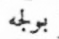yazar (S. 10). Ayasofya ve Bağdat gibi eski Arapça nüshalarda da böyle yazılmıştır. Yine Reşideddin'in Tpk., Haz., Nr. 1653'tdeki nüshasının başlangıcında açık olarak 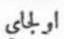 Olcay yazılır (yap. 375 b). Fakat bu yazılış şekli, aynı kişinin ikinci defa adı geçtiğinde, aynı (orthographie) ve üslup ile yazılmamıştır. Bk. F. Sümer, D. T. C. Fak. Dergisi, 1959, s. 369, n. 3. Berezin nüshası gibi geç zamanlarda bu ad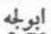Abulca/Ebûlce şekline girmiştir.
Bk. F. Sümer, a. yer.
Bu mesele için bk. Pelliot, Horde d'Or, s. 21-24. Bilindiği üzere Çingiz-Han'ın büyük oğlu Cöci’nin annesi Börta’yi Merkitler esir almış ve Cöci, Merkitler arasında doğmuştu. Bu sebeple Cöci, beşiği ile birlikte Merkitler arasında bulununca, bu da bir olca kabul edilmiş ve Coçin, "misafir" adı verilmişti. Bundan dolayı diğer kardeşleri zaman zaman onu çekememişlerdi. Bu mesele için ayrıca bk. Journ. Asiatique, 1851, s. 108). Olcaytu'nun ikinci okunuş şekli de Olcaitü'dür. Ölcâi, "bahtiyarlık, ikbal ve saadet" manasına gelir. Hambis (Foung-pao, 1945, a. 91-92) ve Pelliot (Horde d'or, s. 67; Gengis-Khan, s. 199) böyle okumuşlardır. Bunları söylemekten maksadımız, düşüncemizi ileri sürerken, değişik fikirleri de göz önünde tuttuğumuzu göstermek içindir. Moğolca ol-, ve türkçe bul- köklerini ilk defa mukayese eden, üstad Pelliot'dur (Horde d'or, s. 24).
Bu mesele için bk. W. Bang, Vom köktürkischen zum osmanischen, IV, s. 15.
Bu ek hakkında Ramstedt ve diğer altaistlerin de fikri henüz daha iyice belirli bir hâle gelmemiştir. Bk. Zeynep Korkmaz, D.T.C. Fak. Dergisi, XVII, s. 339.
Türlü kaynaklardaki bu şecereler için bk. H. G. Raverty, On the Turks, Tartars and Mughals, Trudı Tretyago Mejdunarodnago syezda Orieatalistov..Spb. - Leiden, 1879, s. 71-124. Raverty, İslâm kaynaklarındaki bu uydurma şecereleri münakaşa etmiştir.
Kitan’ların "Sekiz" boyu ve "Sekiz" rakamı ile ilgili diğer içtimâi teşkilâtları için bk. K. Wittfogel, History of Chinese Society, Liao, Philadelphia, 1949, a. 41, 46, 47, 81, 84 n., v.s.
Sekiz-Oğuz'lar ikinci Uygur Kağan'ı Mo-Yen Ch'u (Bayan-Çur) Kağan’ın diktirdiği ve İlim âleminde Şine-Usu yazıtı diye anılan yazıtta geçer.
Dib-Yabgu'nun babası olduğuna göre bu adın Bulca-Han olması lâzımdır.
Ebülgazi 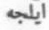 İlce (?)-Han şeklinde yazmıştır (Kononov neşr., t. 11). Kononov ise bu adı Amulca-Han (eklinde düzeltmiştir (Şecere-i Terâkime, s. 76, n. 26).
Kononov'un bu düzeltmeyi neye göre yaptığı pek anlaşılmıyor. Gerçi Türkçede amul
sözü, "sakin, rahat" anlamına gelir (Kaşgari, terc., I, s. 74). Moğol çağında Amal
şeklinde kişi adlarına da rastlıyoruz (Moğ. Gizli Tarihi, A. T emir terc., s. 96). Bu adı
Haenisch, kişi adı; Peliot ve Kozin ise yer adı olarak kabul etmişlerdir (Pelliot,
Gengiz-Khan, s. 208). Shiratori, bunu Emel şeklinde okumuştur. Yalnız bu adı, Moğ.
Gizli Tarihi, 278'deki Amal ile karıştırmamak lâzımdır. Habib üs-Siyer, s. 63'de de yine Moğol çağında yaşamış olan 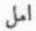 Emel-Hoca adlı birinden söz açılır. Yaptığımız bu tahlil ve giriş, Kononov tarafından yapılmamıştır. Esasen Türkçe Amul ile Moğolca Amil arasında da bir fark vardır. Bütün bunlara rağmen, Kononov'un bu adı nasıl Amulca okuyabildiğini bir türlü anlayamadık.
Kuyuk adı, biraz da Moğol çağı adlarına göre uydurulmuş bir ad olmalıdır Bu
sebeple Kononov, başka bir yazılışı kabul ederek, bu adı Kök (Gök) 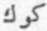 şeklinde okumuştur. (Aynı esr. s. 14). Biz de bu bakımdan, Kononov'un okuyuşunu tercih ediyoruz.
Şecere-i Türki’de Alınca-Han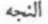iki defa geçmektedir. Bu ad. Elince de okunabilir. Fakat onomastiğe göre Alınca şekli, daha yakın gelmektedir. Alın sözü eski Türkçede, bugünkü "alın" anlamına geldiği gibi, "ön cephe" anlamında daha çok kullanılıyordu (Kaşgari, tercü., I, s. 78). Kereit büyüklerinden ve belki de Ong-Han'ın yakın bir akrabası olan Alın-Taysı'nın da bu kökle ilgili olması çok muhtemeldir. Bk. Pelliot, Gengis-Khan, s. 5422. Uygur ileri gelenleri arasında Alın-Tâmür adını taşıyanlara da rastlamıyor değiliz (B. Ögel, Sino-Turcica, s. 47). Türkçede bu sözden yapılmış alıncak, "at alınlığı" gibi türeyişler de vardır. Alınca (=Alın-ca) gibi küçültme (Demunitif) ekleri ile yeni sözler de yapılabilir. Bu adların manası da "ön" ve "önce" (=ön-ce) anlamı karşılığıdır. Alın sözünün bu manaları için bk. Manichaica, s. 37. Bu girişi yaptıktan sonra, Moğol çağının meşhur generalleri Alıncak-Noyan (Caca-Bey Vakfiyesi, s. 188; Aksarayi, O. Turan neşr., s. 68-69,113) ile Emir Nevrûz Alıncak'ın (Reşideddin, K. Jahn neşr., I, 116) adlarını daha iyi anlayabilir ve daha iyi tahlil edebiliriz. Alıncak şeklinde yazılan bir yer adı da biliyoruz (Reşideddin, Semenov terc., II, s. 242). Bu adları Moğolca ile izah etmenin imkânı yoktur.
İşte bütün bu açıklamalardan sonra, Ebülgazi'nin Türk Şeceresinde geçen Alınca adının mahiyeti kısmen olsun aydınlatılmış oluyor.
Bu dağlar hakkında girişte açıklama yapılmıştır.
Burası, Sir-derya'nın kuzeyindeki Kara-Kum çölü olmalı. Asıl Kara-Kum çölü, Amu nehrinin güneyinde bulunmaktadır. Fakat bu çağda Oğuzların Amu-Derya'nın güneyine inmiş olmaları şüphelidir. A. A. Semenov'un Reşideddin tercümesinde, burasının Karkara (?) adlı bir yer olduğu söylenmektedir (I, i, s. 80). Hiç bir esasa dayanmayan bu nazariyeyi, Kononov da kabul etmiş gibidir (Şecere-i Terâkime, terc., s. 82, n. 29). Ayrıca bk. Sümer, aynı esr., s. 360, n. 4.
Reşideddin'in birçok nüshalarında Borsun olarak yazılan bu yer adının Borsuk okunması lâzımdır. Bk. F. Sümer, aynı esr., 366. Kononov, bu yer adım Bursun okumuştur (Aynı esr., s. 82, n. 30). Ebülgazi, "Sır-Suyı adakı, ve Kara-Kum ve Borsuk'nı kışlak erdi," diyor (Şec. Terâkime, Kononov neşr., s. 12). Anlaşılıyor ki, Borsuk ile Kara-Kum birbirlerine yakın yerlerdi. Şecere-i Türki’nin Desmaisons neşrinde Borsuk yer adını görmüyoruz (Bk. S. 13). Girişte, bu konu üzerinde de durmuştuk.
Kâkîyân yer adını Kononov, Kegen şeklinde okumak istemektedir (Aynı esr., s. 82, n. 29). Ayrıca Kononov, bu yer adını niçin böyle okuduğunu da, inandırıcı bir delille gösterememektedir. Kaşgarlı Mahmud'a göre, Kuyas şehrinden çıkan ve İli nehrine dökülen Ulug-Keyken ve Kiçig-Keyken adlı iki su vardır (Kaşgarî, terc., III, s. 175). Fakat İli bölgesi Üç-ok'ların yaylasıdır. Reşideddin'e göre Kakiyan ise, Boz-ok bölgesinde, yani batıda bulunuyordu.
Cüveynî, s. 41.
Türkische Turfan Texte, III, s. 10. Orun, ortu, orna-, ornak v.s. gibi isimler ve fiil köklerinin bu sözle ilgili olması muhtemeldir. Or ayrıca, bir at rengidir de. Donları "al ile doru" arasında olan atlara or al derler (Kaşgarî, terc., I, s. 45; Radlof, Wörterbuch, I, s. 1047).
Meselâ Kononov, hep böyle okur: Şecere-i Terakime, s. 82, n. 29.
Reşideddin, Tahran neşr.,
Kercitlerden Ong-Han'ın amcası Kurçakuz-Buyruk'un kardeşi, Kûr/Gür-Han adını taşıyordu (Moğ. Gizli Tarihi, 150, 177, 198J. Moğolların gizli tarihinde bu ad Çince transkripsiyonla Ku-erh Han ( = Gur-Han) yazılmıştır. Reşideddin ise aynı şahıstan bahsederken hep, onun adını Kür/Gür-Han diye yazar.
Kara-Hıtay hükümdarının adı Çin kaynaklarında, yine Gur-Han şeklinde yazılmıştır (Liao-shih, 30, 6 a). Cüveyni ise aynı ünvanı, Türkçe karşılığı ile Gür-Han yazar (Cûveynî, aynı eser., s. 43-48).
Wittfogel, bu adın Moğolcasını Gûr-Xan veya Gor-Xan okur (History of Chinese Society, LİAO, s. 43).
Bk. Kaşgari, I, s. 324-325. Aynı kaynakta şöyle bir atasözü de vardır: Kür bolsa, köıcez bolur, yani, "Yiğit olan gururlu olur" .demektir. Altay lehçelerinde de kudret ve kuvvet sahibi toplumlar için, Kür kalık denir (Radlof, Aynı esr II, s. 1447). Anadolu'daki gür kelimesinin de bunlarla ilgili olması muhtemeldir.
Bu kayıtlar için bk. F. Sümer, aynı esr„ s. 360, n.
Meselâ Nuzhet ül-Kulub, bu iki dağın, Kıpçak çöllerinin ünlü dağları olduğunu söylüyor. Bk. F. Sümer, s. 360, n. 4. Ruslardan K. Margulan da, Kazakistan'daki Ulug ve Kiçik-Tag'ların yanında olduğunu söylemiştir (O Xaraktere i istoriçeskoy obuslovlennosti Kazahskogo eposa, Izvestiya Kazaxsk. fil. AN, Ser. istor., 2,27, Alma-Ata, 1946, s. 78,). Çünkü Ebülgazi bu dağlardan Ulug ve Kiçig dağlarla birlikte bahsetmiştir.
Sayın Prof. Z. V. Togan, haklı olarak bu dağları, Tanrı dağlarının kuzeyine koymuştur (Umumi Türk Tarihine Giriş, s. 18). Bor-ok ve Üç-ok'ların yaylak ve kışlak yerleri hakkında en önemli bilgiler, Farsça Oğuz-nâme'de bulunur (Nr. 1653, yap. 385 a). Ayrıca Bk. F. Sümer, aynı esr., s. 366.
Boz-ok'ların yaylak ve kışlakları için de, Hafız Abrû mecmuasındaki eserle, F. Sümer'in makalesinde izahat vardır. Burada okunamayan birçok yer adları şüphesiz ki önemli bir araştırma mevzuudur. Bu denemeyi, başka bir araştırma makalesine bırakmayı daha uygun buluyoruz.
Meselâ Reşideddin'in 2. cildinin kötü bir Rusça tercümesini yapan A. A. Semenov, Ortak ile Kaztak (?)’ın Kara-Tau bölgesi ile Talas'daki Ala-Tau arasında olduğunu ileri sürer (S. 80, n. 1).
Kononov, aynı esr., s. 82, n. 29. Gerçi Kaşgarî, İli nehrine akan bir Kaz-Suyı'ndan bahsetmektedir. Güya Efrâsiyâb'ın Kaz adlı bir kızı varmış ve bu kız, bu suyun kenarında bir kale yaptırmış imiş. Bundan dolayı da, suyun adına Kaz adı verilmiş (Kaşgarî, terc., III, s. 151). Tabii olarak Kononov bu dağa Kaz-Tag derken ve bu nazariyesini ileri sürerken, Kaşgari’nin bu enteresan kaydından haberi yoktur.
Kononov ile diğer Rusların ellerinde, bizim gibi kuvvetli kaynaklar yoktur.
Kaşgari, terc., I, s. 59; III, s. 375. İli nehri Türk kültür tarihi bakımından da büyük bir önem taşır. Eski Türk inanışlarına göre ilk Türk Takvimi de ili nehri kenarında icad edilmişti (Kaşgarî, Kilisli neşr., I, s. 288; tere., I, s. 345). Tabii olarak, İli nehrinin daha ziyade Tanrı dağlarının eteklerindeki havzaları önem taşıyordu. Çünkü büyük kültür şehirleri bu bölgelerde bulunuyorlardı.
Kaşgari, I, s. 366; III, s. 235. Aynı kaynakta, batıdaki Talas nehrine Ulug-Talas denmektedir.
Aynı esr., III, s. 236.
Aynı esr., I, s. 92, 408.
Nr. 1653, yap. 385 a; F. Sümer, aynı esr., s. 367.
1262 den sonra bu bölgeler, Çağatay hanedanından Algu'nun eline geçti. Ondan sonra da bir müddet için Kaydu'nun elinde bulunuyordu.
Koniçi'nin yurdu, daha kuzeyde idi. Erik-Büge ve Kubilay-Han rekabetinden istifade eden Koniçi, bir müddet için buraları ele geçirmiş bulunuyordu.
Metinde Kara-bah yazılıyor. Biz, Kara-Tag okuduk. Fakat elimizde bir delil de yoktur. Ayrıca bk. Sümer, s. 366.
Aynı esr., a. yer.
Z. V. Togan, aynı esr., s. 19.
Tanrı dağlarında pek çok Ak-Tag vardır. Burasının da. Talaş Ala-Tau'larının batı kısmında bulunması çok muhtemeldir.
F. Sümer, aynı esr., a. yer.
Bu adın Yavku/Yabgu şeklinde okunması gerekeceğini, ilk defa sayın Prof. Abdulkadir İnan söylemiştir. Sayın Prof. Togan'a göre Dib sözü, İran dillerindeki Div, "dev" deyimi ile izah edilmelidir. Bu meselede kesin bir sonuca erişilememiştir.
Diğer adları girişte incelemiştik. Burada daha ziyade Küz-Han ünvanı üzerinde durmak istiyoruz. Bu unvanın izahı gerçekten çok güçtür. Esasen bu adı, Or, Kür, Küz gibi bir paralelizme uyarak, Küz şeklinde okuyoruz. Fakat bu okuyuş, Rusların Kaz-Han şeklinde okuyuşlarından daha iyi olsa gerektir. Kuz-Uluş, Kuz-Ordu gibi şehir adlarının başına sıfat olarak gelen Kuz sözünü biliyoruz. Fakat Küz ile Kuz arasında epey bir fark vardır. Açıkçası, Küz-Han'ı etimoloji bakımından açıklayacak bir durumda değiliz.
Oğuz Han'ın doğumunu ve çocukluğunu Ebülgazi Bahadır Han'ın Türkmen ve Türk Seçeresi, biraz daha başka türlü anlatıyor. Bu başlangıç metinleri, her iki kitapta da aynıdır. Yazar, Oğuz destanını biraz da kendi çağının yaşayış ve anlayışına uydurmuş ve buna göre açıklamalar yapmıştır:
"Kara-Han'ın büyük karısından aydan ve güneşten daha güzel bir oğlu oldu. Doğduktan sonra üç gün, üç gece anasının memesini emmedi. Her gece annesinin rüyasına geliyor ve annesine şöyle diyordu;
—"Müslüman ol ve hak dinine gel! Yok, gelmezsen, ben de senin sütünü emmem," diyordu. Burnun üzerine annesi oğlunun bu isteğine dayanamadı ve Tanrının birliğine iman getirdi. Bunun üzerine Oğuz-Han annesinin memesini emmeye başladı. Fakat annesi ne gördüğü rüyaları ve ne de oğlunun isteği üzerine Müslüman olduğunu hiç kimseye açmadı. Çünkü Türk halkı, Yafes'ten ta Alınca-Han'a kadar Tanrının birliğine iman etmişti. Ama Alınca-Han'dan sonra Türkler çok zengin olmuşlar ve servetle paraya esir olmuşlardı. Bütün memleket Tanrıyı unutarak kâfir olmuş ve kötü yola sapmışlardı. Kara-Han zamanında ise büsbütün kâfir olmuşlar ve küfre sapmışlardı. Meselâ bir baba, oğullarından birinin veyahut da bir oğul, babasının hak dinini kabul ettiğini duysa idi, hemen onu düşünmeden öldürürdü." Bu metin için bk. Şecere-i Terâkime, Kononov nşr., metin, s. 13; Şecere-i Türli : Demaison nşr., s. 13; Kazan nşr., s. 8.
Oğuz-Han'ın ad koyma törenini Ebülgazi Bahadır-Han, her iki kitabında şöyle anlatıyor. Bilindiği üzere Ebülgazi Bahadır Han, Türkmenlerle yaptığı harplerden sonra, Türkmen an'anelerine karşı cephe almış ve kendisini zorla Moğollaştırmak istemiştir. Bu sebeple çoğu yerlerde Türk sözünü kullanırken, burada Oğuz-Han'ın adının Moğol âdetlerine göre konduğunu söylüyor. Bu, zoraki olarak söylenmiş bir cümledir:
"O çağdaki Moğol âdetlerine göre, yeni doğan bir oğlana bir yaşına girmeden ad koymazlardı. Oğuz-Han bir yaşına basınca, babası Kara-Han bütün memlekete haber saldı ve büyük bir toy düzenleyerek ziyafetler çekti. Ziyafet günü Kara-Han, oğlunu ziyafet meclisine getirdi ve şöyle dedi;
- "Oğlum artık bir yaşına geldi. Bu oğlana ne ad koyacağız?" Beğler, Kara-Han’ın sözüne cevap vermeden, oğlan konuşmağa başladı ve şöyle dedi;
- "Benim adım Oğuz'dur !" Bu sözü duyan herkes ona hayran kaldı ve hep birden şöyle dediler;
- "Mademki bu çocuk, kendi adını kendisi koydu, o addan daha iyi bir ad bulunamaz!" Artık bundan sonra onu herkes bu adla adlandırdılar. Onun falına bakıp şöyle dediler : -"Şimdiye kadar henüz daha bir yaşına gelmiş bir çocuğun, böyle söyleyip de kendine ad koyduğu ne duyulmuş ve ne de işitilmiştir. Bu sebeple bu çocuk, uzun ömürlü, büyük bir üne sahip olacak ve çok geniş bir ülkeye de hükmedecektir." (Ebülgazi Bahadır Han, aynı esr., aynı yer).
Daha eski ve önemli bir kaynakta ise, kendisine ad konacağı zaman Oğuz-Han şöyle diyor; - "Sarayda doğduğum için, adım Oğuz konsun ." (Tpk., Haz., Nr. 1653, yap. 375 b; F. Sümer, D.T.C. Fak. Dergisi, 1959, s. 361)
Ebülgazi Bahadır Han, Oğuz'un "Allah! Allah!" deyip gezmesini şöyle anlatıyor:
"Çocuk Allah! Allah! Diye bağırıp geziyordu. Bunu duyup, işitenler ise, bu sözlere önem vermiyorlar ve şöyle diyorlardı:
- "Nihayet bir çocuktur. Ne söylediğini bilmiyor" Çünkü "Allah" sözü Arapça idi. Bu sıradaki Türkler ve Moğollar ise Arapça bilmiyorlardı. Tanrı Oğuz-Han'ı bir ermiş ve velî olarak yaratmış ve kendi adı olan "Allah" sözünü de onun kalbine koymuştu" (Aynı eser ve aynı yerler.)
Müslümanlık dolayısı ile, Oğuz-Han'ın babası ile arasının açılması konusunda, biraz da halk rivayetine göre, W. Radlof da durmuştur. Bk. Das Kutadgu-Bilik, Spb., 1893, I, s. 2.
Bu şiir, Ebülgazi Bahadır Han'ın iki eserindeki metinler de göz önünde tutularak yazılmıştır. Ebülgazi, Oğuz-Han'ın bu çağdaki hayatı için şöyle diyor:
"Oğuz-Han büyüyünce, babası Kara-Han, kendi küçük kardeşi olan Öz-Han'ın kızını Oğuz’a aldı. Oğuz, karısıyla beraber yalnız kalınca şöyle dedi:
- "Seni ve beni yaratan bir Tanrı vardır. Onun da adı, "Allah"dır. Allah’ı var bil ve bir bil! Onun buyruğundan çıkma! " Fakat karısı bunu kabul etmedi. Bunun üzerine Oğuz da ondan ayrı yaşamaya başladı ve onunla hiç konuşmadı. Bir süre sonra etrafındakiler Kara-Han’a şöyle dediler;
- "Oğlun karısını hiç sevmiyor ve evlendiğinden beri de onunla hiç yatmıyor!" Bunun üzerine Kara-Han, oğluna diğer küçük kardeşi Küz-Han'ın kızını aldı. Oğuz ona da Hak dinine girmesini ve Tanrı’ya tapmasını söyledi. Fakat o da kabul etmedi. Oğuz, bunun üzerine bu ikinci karısından da ayrı yaşamaya başladı.
"Bundan bir kaç sene sonra Oğuz-Han bir ava çıkmıştı. Avlana avlana bir suyun kenarına geldi. Suyun kıyısında birçok kadınlar çamaşır yıkıyorlardı. Onların başında da, amcası Kür-Han'ın kızı vardı. Kıza hemen içini açmak istedi. Birisini kıza göndermek istedi; fakat sırrının ortaya çıkabileceğini düşünerek bundan vazgeçti. Başka çare yoktu. Hemen kızı bir kenara çekti ve kıza bu söyleyeceklerine dair, hiç kimseye bir şey söylemeyeceğine and içtirdi ve şöyle dedi:
- "Biliyorsun, babam bana iki kız aldı. Fakat ben onlardan hiç birisini sevemedim! Sebebi ise benim Hak yolunda olmamdır. Onlar ise kâfirdirler. Gelin, Müslüman olun dedim. Onlar ise bunu kabul etmediler. Eğer bu dileğimi sen kabul edersen, ben de seni alırım! " Kız da:
- "Sen ne yolda olursan, ben de o yola girerim!" Dedi. Bunun üzerine Oğuz-Han babasına küçük amcasının kızı ile evlenmek istediğini söyledi. Babası da çok büyük bir düğün yaptı ve bu kızı oğluna aldı. Oğuz artık bu karısını çok sevmişti. Böylece aradan seneler geçmiş oldu. "
Câmi-üt-Tevârih, "Gök ve yer Allahı"nı açık olarak ifade etmiştir (Tpk., Revan, Nr. 1518, s. 11). Bu deyimin İslamiyet’le bağdaşmasına imkân yoktur, öyle anlaşılıyor ki bu kısımlar, İslamiyet’ten önceki çağlarda yazılmış Oğuz-name'lerden alınırken, bu cümleye dokunulmamıştır.
Ebûlgazi, Kara-Han'ın gelinlerine toy vererek çağırmasını şöyle anlatıyor:
"Günlerden bir gün Oğuz, çok uzak bir yerde ava gitmişti. Kara-Han, bütün karılarıyla gelinlerini evine davet etmiş ve hep beraber yemek yiyorlardı. Konuşurlarken, bu arada Kara-Han karısına :
- "Oğuz niçin ilk karılarını sevmiyor da bu sonuncu karısını seviyor, bunun sebebi nedir? " Dedi. Karısı da;
- "Ben bilmiyorum. Bunu herhalde gelinlerin bilir" dedi. Bunun üzerine Kara-Han gelinlerine sordu ve büyük gelini de şöyle dedi:
- "Oğuz bize, "yalnız bir Tanrı vardır", dedi. Bizi de ona inandırmak ve o yola götürmek istedi. Biz de bunu kabul etmedik. Onun isteğini üçüncü gelin kabul etti ve bunun için de oğlunuz onu çok seviyor. Bunun üzerine Kara-Han beğlerinin hepsini topladı ve Oğuz'un durumunu konuştu. Beğlerin toplantısında, Oğuz daha avda iken tutulup öldürülmesi karar altına alındı. Kara-Han, hemen etrafa adamlar saldı. Kendisinin ava gideceğini ve bunun için de askerlerinin hepsinin kendi etrafında toplanmasını emretti. " (Desmaison neşr., s. 16; Kononov neşr., s. 17).
Ebülgazi, bu olayı şöyle anlatıyor:
"Oğuz'un küçük karısı, Kara-Han'ın Oğuz'u öldürme kararını duyunca, hemen Oğuz'a bir adam saldı ve durumu Oğuz'a bildirdi. Oğuz da yurda hemen adamlar gönderdi ve şöyle dedi;
- "Babam asker topluyormuş ve üzerime gelip beni öldürecekmiş. Beni sevenler bana gelsinler, onu sevenler de ona gitsinler!" Halkın çoğu Kara-Han'ın etrafında toplanmışlardı. Azı ise Oğuz Han'ın yanına geldiler. Oğuz'un etrafında toplananlar arasında, amcalarının bir çok oğulları da vardı. Bu çağda böyle bir şeyin olması, hiç kimsenin aklına gelmezdi. Oğuz Han, kendisini destekleyenlere, "Uygur" adını verdi. Uygur sözü, Türkçede yapışan (Yapışğur) anlamına gelir. Meselâ sütle yoğurt arasında fark vardır. Süt, yoğurt olduktan sonra birbirine yapışır ve birleşir, bir katı olur. Bu insanlar da gelmişler ve Oğuz- Hanın eteğine yapışmışlardı. Tıpkı imama uyulduğu gibi, onlar da Oğuz-Han'a uymuşlardı. Nasıl imam kalkarsa kalkıldığı ve yatarsa da yatıldığı gibi. Bunlara da Uygur, yani uyan kimseler dediler." (Desmaison neşr., s. 16-17; Kononov neşr., s. 11). Ebülgazi, "Uygur" la, "Yoğurt" sözü arasında bir bağ bulmak istemektedir.
Ebülgazi, Kara-Han'la Oğuz-Han'ın savaşını kısa olarak şöyle anlatıyor:
"Her iki taraf da, saf düzeni halinde sıralandılar ve vuruşmağa başladılar. Oğuz galip geldi ve ötekiler ise kaçtılar. Savaş sırasında Kara-Han'ın başına bilinmeyen bir taraftan bir ok gelerek onu öldürdü. Bu suretle Oğuz-Han, babasının tahtına oturdu." (Desmaison neşr., s. 17; Kazan neşr., s. 12; Kononov neşr., s. 11).
Daha eski ve orijinal olan Reşideddin'in metinlerinde, Kara-Han'ın bir kılıç darbesi ile öldüğü söylenmektedir. Fakat bütün kaynaklarda, Kara-Han'ın kimin eli ile öldüğü söylenmemektedir. Kara-Han, bizzat oğlunun eli ile öldürülmemişti. Metinlerin ifadesinden, dinsiz Kara-Han'ın yine Tanrının isteği ile öldüğü anlaşılıyor.
Bu ifadeyi yalnızca Ebülgazi'de bulabiliyoruz. Yukarıdaki nota bakınız.
Cami-üt Tevarih, Alizade neşr. S.90-2.
Tpk., Haz., Nr. 1653, yap. 376 b; Krşl. F. Sümer, aynı esr., s. 361. Mogol sözü Hafız Abru'daki Oğuzname'de Mung-al (>Mungal) türeyişi ile açıklanmak isteniyor. Tabiidir ki bu bir halk etimolojisidir. Eski Türkçede mung, "sıkıntı, bun, ızdırap" manasına gelirdi (Kaşgarî, terc., III, s. 33). Farsçada gam-hin kelimesi, buna karşılık olarak veriliyor (Nr. 1653, yap. 476; Sümer, aynı esr., s. 361). Bilhassa Batı Türk lehçelerinde ve Kıpçak bölgesinde, Mongol/Monggol sözünün Monggal şeklinde söylendiğini de görmüyor değiliz (Pelliot, Horde d'Or, s. 53). Bu söylenişin tesiri altında kalan Ruslar da Moğollara Moal derler. Avrupalıların da Mughal demelerinin sebebini, yine Kıpçak lehçesinin bu değişik söylenişinde aramalıdır. Meselâ Cöçi-Han'ın 7. oğlu Bo'ol'un adı, Altınordu devletinde Bokal/Boal şeklinde girmiştir. (Reşideddin, Blochet neşr., II, s. 121, 122). Türkler de bu adı daha da Türkçeleştirmiş ve Bowal demişlerdir. Mogol adı da, Türkçeleşerek Muwal/Mowal şekline girmiş olabilir.
Şecere-Türkî, Desmaisons neşr., s, 17-18; Şecere-i Terâkime, Kononov neşr., a. Yer.
Reşideddîn, Alizade neşr., I, s. 103
Tpk. Revan, Nr. 1518’ de bu bölüm noksandır. Oğuz Han’ın Uygurları Derbent’e kadar götürüp de, sonra geriye gönderme olayı Tpk. Haz. 1653, yap. 376 a’da da vardır. Reşidettin’in bu sözlerini Uygur bölümünde yeniden tekrarlar. (Berezin neşr., I, s.159)
Kanglı boy adının ayrı yazılışlarını ve bu ad üzerindeki görüşleri, kendi hayâli fikirlerini de katarak Marquart toplamıştı: Über das Volkstum der Komanen, s. 163-172. Bundan sonra bilhassa Japonlar, burada yazmaya değer görmediğimiz, fikir spekülasyonu denebilecek bir çok nazariyeler ileri sürmüşlerdir. Türkçede Kang (Uyg.) (Radlof, Worterbuch, II, s. 80) ve Kangğ (Koyb. Kaç. Sag.) (Aynı esr., II, 80-81), "araba" anlamına gelir. Eğer Oğuz destanındaki etimoloji doğru ise, "arabalı" anlamına, kang sözünden bir sıfat yapmak gerekir. O da Kang-lug şeklinde olabilir. Bu mesele için bk. Pelliot Toung-pao, 1930, s. 337-338. Kangluğ (Kang-luğ) şekli, daha ziyade Uygurcadır. Bu söz, Oğuz lehçesinden ise Kang-lığ olmalıdır. Bu boy adının çok eski devirlerden kalmış olması da muhtemeldir. Fakat bu problemler üzerinde durmayacağız. Uygurca Oğuz destanına göre, Kanglı boy adı, Kanğa kökünden türemiştir. Bu duruma göre, *Kanğa-luğ (> Kang (a)-luğ, Kangluğ, Kanglu/Kanglı) şeklinde bir türeyişten söz açılmak isteniyor demektir. Unutmayalım ki, bunların hepsi, halk etimolojisidir. Bununla beraber Türk filolojisine göre, halkın düşünüşünü de değerlendirmenin ayrı bir faydası olduğunu hatırımızdan çıkarmamamız lâzımdır.
Bang-Arat, Oğuz Kağan Destanı, 261-288.
Ebülgazi, Desmaisons neşr-, s. 18; Kononov, s. 18.
Cürçet ülkesi, daha ziyade, Kadırğan dağlarının doğu ve güney eteklerinde kalan bölgedir. Bir kısım Moğollar da bu bölgede bulunuyorlardı. Bu izah, Çingiz-Han çağı etnik durumu bakımından doğrudur. Tpk. Haz. 1653, yap. 376 a, kısa olarak Kanglıların meydana gelişini anlatırken, bu araba yapma olayının Oğuz-Han'ın hangi seferinde olduğunu söylemiyor.
Reşideddin, Alizade neşr., I, s. 105.
Bang-Arat, Oğuz Kağan destanı, 201-205. Kıpçaklarla ilgili diğer bilgiler, İt-Barak'lara ait bölümümüzde verilmiştir.
Oğuz-Han'ın İnal-Han'a karşı yaptığı akın, yalnızca Tpk. Haz. 1653, yap. 377’de vardır, öyle anlaşılıyor ki, İnal-Han'ın yurdu Oğuz-Han'ınkine çok yakındı. Bu İnal-Han'ın, Nayman Hakanı İnan-Han'la ilgili olması muhtemeldir. Çünkü Naymanların yurdu, Oğuz-Han'ınkine çok yakındı. Nayman hakanı İnan-Han için bk. Tpk., Revan, nr. 1518, yap. 32. Bu metinde geçen yer adları ayrı bölümümüzde incelenmiştir.
Cami üt-Tevârih, Alizade neşr., I, s. 106.
Tpk., Hazine, Nr. 1653, yap. 377.
Farsça destan, Gur ve Garcistan seferinden bahsederken, Oğuz Han'ın İnan-Han'ı mağlup ettikten sonra Or-Tağ ile Kür-Tağ’a döndüğünü yazıyor. Oğuz-Han bundan sonra beylerini toplayarak Pencâb yönüne bir akın yapılmasını karar altına alıyor. Amu nehrini geçtikten sonra, Gur ve Garcistan'a bir elçi gönderiyor ve Gur hükümdarı, elçileri büyük bir saygı ile karşılıyor. Bundan sonra Gazne, Zâbil, Kabil, tamamen Oğuz Han'ın emri altına girmiş oluyor ve vergiye bağlanıyor (Tpk., Haz., 1653, yap. 377 b).
Şecere-i Türkî, Desmaisons neşr., s. 21. Ortaçağda Gur bölgesi, Bamyan ile Herat arasındaki yerlerdi. Bk. Barthold, Turkestan, II, s. 326; Hudûd al’alam, s. 4-5.
Bang-Arat, Oğuz Kağan Destanı, 226-247
Ebülgazi, Desmaisons neşr., s. 21; Kononov, s. 22.
Cürçet sözünü biz burada daha ziyade Uygurca Oğuz destanına göre yazdık. Aslı da böyledir. Kononov da bu halkın adını Çurçıt şeklinde okumuştur (Şecere-i Terâkime, s. 89, n. 39). Kononov'un neye dayanarak böyle bir yazış tarzı kabul ettiği pek anlaşılmıyor. Ayrıca burası, yanlış olarak İdil bölgesinde bir yer olarak da gösterilmiştir. Desmaisons da burasını Curcan ile birleştirmişti (Şecere-i Türkî, Fr. tere., s. 17,). Hâlbuki Reşideddin'in Cürçet'ler bölümünde bu konuda çok geniş bir bilgi verilmiştir. Bunlar, daha ziyade Kuzey Çin'de ve Mançurya'da oturan ve Moğollara akraba olan bir kavimdir. Uygurların Oğuz destanına göre Oğuz-Han, Mançurya'daki Cürçet seferinden sonra batıya dönmüş ve Hindistan, Tangut ülkesi ile Suriye'de "Şağam" yani Şam'ı almıştır (R. Arat, aynı esr., 290). Uygurların Batı hakkında fazla bilgileri olmadığından, kendi Oğuz destanlarında bu bölgeler hakkında fazla bilgi vermemişlerdir.
Uygur Oğuz Destan'ında, Oğuz-Han'ın "Barkan" adlı bir bölgeyi de aldığından söz açılıyor. Burasının çok zengin ve sıcak olduğu da söyleniyor (R. R. Arat, aynı esr., 297). Yer adı olarak Barkan, eski Türkçede iki yeri ifade ederdi. Bunlardan birincisi, Kaşgar şehri yakınındaki bir dağ üzerinde bulunan bir kaledir. Kaşgar bölgesi, söylendiği kadar sıcak ve zengin değildi. Ayrıca Türkler, Çin'in aşağı bölgelerine de "Barkan" adını verirlerdi (Divanü Lügat it-Türk, terc., I, s. 436, 453). Oğuz-Han'ın Altun-Kağan'a karşı yaptığı harp için bk. R. R. Arat, aynı esr., 115-124.
Bang-Arat Aynı eser, 248-260
Câmî üt-Tevârih, Alizade neşr., I, s. 107.
Ebülgazi, Desm. neşr., s. 21; Kononov, s. 23.
Sayın O. Ş. Gökyay, çok haklı olarak Ozgan-Han9İa Oğuz-Han'ın aynı şahıs olabileceklerini ileri sürmüşlerdir (Necati Lugal Armağanı, s. 287). Bu fikir, için bk. Usbekische Epos Chan-nâme, CAJ, 1, 2, s. 145 v.d. Ozgan yazılış şekli belki de şöyle bir değişim sonunda meydana gelmiştir: Ozgan/Uzgan 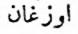< (?) < 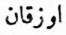 Oz-Kan/ Uz-kan < Uz-kan/Oz-Kan <Oğuz-/Uğuz-Kan). Kıpçak lehçesinde, "Ö-/Ü'/Yü-" ve "0-U-" baş ses değişimleri, çok görülen bir şeydir. Mesela "öz-bek/Üz-bek/Yüz-bek" gibi. Bk. Pelliot, La Horde d'or, s. 92. Bu sebeple bu ad Kıpçak lehçesinde daha ziyade "Uzgan" şeklinde okunmalıdır.
Sık sık söylediğimiz gibi "Yedi rakamı" Batı Türkeri’nce kutsal bir sayı idi. İstemi-Kağan, Bizans imparatoruna yazdığı mektubunda, dünyanın yedi bölümünden söz açmıştı. Doğu Türklerinde ve Moğollarda "Dokuz" sayısı önemlidir. Şamanizm’de de öyledir. Fakat Batı Sibirya halklarının an’anelerinde ve bu bölgede yaygın olan Şamanizm'de dokuz sayısının yerini yedi almıştır. Batı da "Yedi" sayısının önem kazanmasının sebeplerini, Ortadoğu ve İran kültürünün tesirlerinde aramak gereklidir. Bu konuları "Türk Kozmogonisi" adlı bölümümüzde geniş olarak ele almıştık.
Benân, İran edebiyatından ve Şâh-nâme'den alınmış bir tabir olmalıdır. Farsçada ekin ve bağ bekçilerine ben denirdi (Burhan-ı katı, s. 126). Benân, belki de bunun çoğulu (?) idi. Çılbân/Çalbân, ses itibarı ile biraz Türkçeye benzemektedir. Fakat kanaatımızca bunun kökünü de Farsçada aramak lâzımdır.
Râk-Han'ın da kim olduğu pek anlaşılmıyor. Belki de bu ad, Zahhak'ın kısaltılmış bir şekli idi : *Zâk-Han (= Fars. Zahâk, Dhahhak) gibi. Bilindiği üzere Zahâk, meşhur İran Padişahı Cem (Yima)'i öldüren Sâmi Padişahı idi. Han-nâme'nin dediğine göre Râk-Han, Hak-Han ile komşu idi. Bundan sonraki notumuzda göstereceğimiz gibi, o zaman Râk-Han'ın ülkesinin ya Kıpçak ülkesinde veyahut da Uzakdoğu'da bulunması lâzımdır. Tabii olarak bütün bu fikirlerimizde tam bir kesinlik yoktur.
Türk mitolojisi üzerindeki İslâmiyet ve İran tesirlerini incelerken, Izdıhak veya Izdahak sözünün, Sâmi Padişahı Zahhak/Dhahak/Dhaka adı ile ilgili olabileceğini düşünmüştük. Bu padişahın Zend-Avesta'daki adının da, Azhi-Dahaka şeklinde yazılmış olduğunu göstermiş ve bu ihtimâl üzerinde durmuştuk. Ayrıca bk. Darmsteter, Zend-Avesta, I, s. 86-87.
Atalık, Türkistan'da büyük bir vezirlik rütbesidir. Rahmetli Şeyh Süleyman Efendi, halkın isteğini Padişaha arz eden ve yapılacak şeyleri dinleyerek yerine getiren, tıpkı bir babalık gibi şefkat dolu olarak halkın durumundan haberdar olmaya memur ve padişahın babası gibi itimat ettiği kimsedir der (Lûg. Çagatayî, s. i). Tabii olarak bu memuriyetin de zaman zaman mahiyeti değişmiştir. Fakat yukarıdaki izâh, hemen hemen her çağdaki Atalık'ları tarif eden genel bir açıklamadır. Farsça Oğuz-nâme'de de, Oğuz-Han'ın akıl danıştığı böyle yaşlı kimseler vardır.
Kıpçak illerinde seyahat eden seyyahlar, Polonya ve Eflak'a yakın bölgelere Ilac/Illac adını vermişlerdi. Bk. Rubruck, Van den Wygnaert neşr., s. 219; Plano de Carpıni, F. Risch neşr., s. 305-306, 393; Risch, Iflak şeklinde düzeltmiştir. Fakat Moğol çağı kaynakları, meselâ Reşideddin, Polonya taraflarına yapılan akından bahsederken, bu bölgeye Ila'ut/llaıcut adını vermiştir (E. Blochet, L'histoire des Mongols, II, s. 55). Seyyah Rubruck'a göre, Ilac, Başgırd (Pascatur) ülkesine yakındı (Van den Wygnaert neşr., I, s. 219). Marco Polo da, Sartaktai'ın oğlu Koniçi (Conci)'den söz açarken, onun arazisinin "karanlık ülkelerde" olduğunu ve bu ilin adına da Lac dendiğini söyler. Bu ülkeleri sayarken de, Rosie, Comanie, Alanie Lac, Mengiar, Çis, Gutia ve Gaçarie gibi bir sıra takip eder (Yule The travels of Marco Polo, II, s. 498).
Iz-Dahâk, Ozgan-Han'ın oğlu Ulug-Han'a ve daha sonraki Kıpçak padişahlarına da vezirlik edecektir. Yafes'in oğlu Kemeri (Comer)'in vezirliği de aynı şekilde devam edecektir. Üçüncü Vezir (Atalık), Ulug-Arslan ise Türk’tür.
Kerûy ve Şerûy Şah-nâme'de adı geçen İran'ın meşhur cihân pehlivanlarıdır. Bu sebeple bu adlar, Kerûylı Şerûylı, şeklinde okunmalıdır kanaatındayız. Sangalak ise, yine Şah-name'deki Sandarak olmalıdır.
Güney Sibirya'daki Abakan Türk masallarında da sık sık görülen bu tip güreş ve savaşların yedi veya dokuz sene sürdüğü görülüyor. Fakat buradaki savaş, yine Şah-nâme'nin üslûbuna uygundur.
Sayın 0. Ş. Gökyav, bu sözü Hazer okumak istemiştir (Aynı eser. s. 287). Fakat metinde bu davranışı teyid edecek, ne bir yer ismi ve ne de bir tarih olayı görünmektedir. Bununla beraber Han-nâme, Hazer-Han'ına çok yer verecektir. Bu sebeple biz de bu görüşü kabul etmek zorundayız. Bununla beraber, metnin orijinal söyleyişini göstermek için, arada sırada Hurer sözünü kullandık.
Kaşgarlı Mahmud, Xuzar veya Xozar adlı bir Türk ülkesinden söz açmaktadır (Terc., I, 411). .1. Deny de, Hazar sözünü Türkçe Kuz-ar, yani "kuzey eri" şeklinde açıklamak istemişti (Melanges Emile Boisacq, Annuaire de L'Inst. de Phil..., V, Brüksel, s. 298-300). Fakat Kaşgarlı Mahmud, Huzar/Hozar ile Hazar'ları birbirinden ayırarak ayrı ayrı iki Türk ülkesi olarak tarif etmiş değildir. Hazer denizinden söz açtığı halde (III, s. 150), ayrıca Hazer'lerden bahsetmemiştir. Daha önce H. Vambery de, Çağataycada, Hazar'lara Ozar (Khozar) adı verildiği üzerinde durmuştu (Çagataische Sprachstudien, s. 264). Ruslar da Hazar'lara Khozary diyorlardı. Bu sebeple Han-nâme'nin Hazarların adını Huzer şeklinde yazması normal görülmelidir.
Burada yine, Özbek adı etnik bir anlamda değil; daha ziyade Oğuz-Han'a isyan eden "Türk âsileri" anlamında kullanılmaktadır. Han-nâme Özbek'leri, Kıpçak sahrası ile Aral gölü arasında yaşayan bir kavim olarak kabul etmiştir. Bu sebeple, Ozgan veya Oğuz-Han'ın, Hazer ülkesine Orta Asya’dan giderken, Özbek’lere rastlamış olması normal kabul edilmelidir. Bu da Hurer ilinin, Hazer olması ihtimalini bir kat daha kuvvetlendiren bir delildir.
Az önce Sangalak şeklinde geçen bu ad, şimdi de Şah-nâme'deki şekli ile, Sandarak olarak yazılmıştır.
Sayın Prof. Z. V. Togan'a göre bu ad, Kem-eri okunmalıdır. Sayın üstadımızın geniş bilgi ve vukufları hepimizce malûmdur. Bu fikirlerinde, elbet de dayandıkları bir nokta da vardır. Ancak biz burada, Han-nâme yazarı Îmâmi'nin bilgisinin Şah-nâme ve Kısas-ı Enbiya'ların pek dışına çıkmış olabileceğine ihtimal vermiyoruz. Bu yine, Yafes'in oğlu Kimeri’den başka bir kimse olmamalıydı.
Ozgan-Han'ın bundan sonraki akını, Rûyin-Han üzerine yapılmıştır. Rûyin-Han herhalde Kıpçak ülkesinde yaşamıyordu. Akınların sırasını bozmamak için, Rûyin- Han seferini de buraya koyduk.
Rûyin-Han, Efrasiyâb'ın oğlu idi. Kendi kızına âşık olan İran kahramanı Bijen veya Bicen pehlivanı, yedi sene bir kuyu içine hapsetmişti. Sonradan Bijen pehlivan bu kuyudan çıkar ve Rûyin-Han'ı öldürür. Cüveynî'ye göre bu kuyu, Çingiz İmparatorluğunun ve daha önce Uygurların başkenti olan Kara-Korum şehrinde bulunuyordu (Cüveynî, I, s. 40, 62).
Dikkat edilirse Han-nâme'de, Ozgan, Kimeri, Rûyin ve Saklab, birer kardeş olarak kabul edilmişlerdir. Bunun için de hepsi, verilen öğütler sonunda, gönül isteği ile Ozgan-Han'a baş eğmişlerdir.
Bundan sonra verilen bilgiler, mitoloji araştırması bakımından önemli değildir.
Saklab sözünün tarihte, bir yer ve kavim adı olarak, başlıca üç manası vardır. En eskiden Avar'lar için kullanılan umumî bir tabirdi. Sonradan Bulgar Kralı Tervel ve onun Islav ırkından olan tâbileri için kullanılmış ve sonra da Bulgar'lar için umumi bir ad olarak verilmiştir. Bk. Z.V. Togan, İbn Fadlan’s Reisebericht, s. 259; Moravesik, Byzantino-Turcica, II, s. 278.
Uygurca Oğuz-nâme'ye göre, Oğus-Han, bu unvanı kendisine kolayca baş eğen Uruz-Beg’in oğluna vermişti. Han-nâme ise soy kütüğüne Saklab'dan başlar ve onun iki oğlu Barak ile Kıfçak’tan bahseder. Uruz-Beg'den haberi yoktur.
Burada da görülüyor ki Han-name, Ozgan-Han, Kimerî ve Saklab'ı, birer kardeş olarak kabul ediyordu. Bunların hepsi de Kil-Han’ın birer oğlu olmalı idiler.
Han-nâme burada, Türk adının yerine Özbek sözünü koymuştur. Özbek'ler, bugünkü Hive, Hocend vs. gibi yerlerde, büyük kabileler halinde yaşarlar. Herhalde bu kabilelerin meydana gelişinde Altınordu ve Özbek Hanlıklarının rolü büyüktü. Çağatay lehçesinde "Özbek'" sözü, "cesur ve kahraman"; "özbeklik" ise, "namus ve cesaret sahibi olmak" manasına gelirdi (Radlof, Wörterbuch, I, s. 1306). Özbek sözünün bu anlamı da, Özbek Hanlığının kuruluşundan sonra meydana gelmiş olmalıdır. Han-nâme "başsız, padişahsız Özbekler" den sık sık bahsetmektedir. Bu sebeple esas anlamının, "asilik, başıboşluk" karşılığı olması çok muhtemeldir. Bir bakıma "Kazak" sözü de Türkçede aynı manaya gelir (Radlof, aynı esr., II, s. 364).
Bu kitapta İt-Barak'lara özel bir bölüm ayrılmıştır. Bu bölümde de gösterdiğimiz gibi It-Baraklar, İtil nehrinin ötesinde, "karanlık ülkelerde" idiler. Oğuz destanında It-Barak'ların idaresi, daima Kıpçak'ların eline verilmiştir. Esasen yine Türk mitolojisine göre Kıpçak, Oğuz-Han'ın Ît-Barak akınında bir adada doğmuştu.
Han-nâme, Kıpçak adının aslı üzerinde durmaktadır. Fakat bu bölgeye ne için kıpçak dendiğini kendisi de söylemiyor. Öyle anlaşılıyor ki Han-nâme'ye göre, Kıpçak'ın bu bölgede harp yapması dolayısıyla, bu yer adı ortaya çıkmıştır. Barak'la Kıpçak'ın kardeş sayılmış olmalarına rağmen, Barak ikinci plana itilmiştir.
Türk Mitolojisine göre Kıpçak, Oğuz-Han adına bütün bu bölgeleri idare eden bir atanın ve onun soylarının adıdır. Ebülgazi, Bunu gayet güzel ifade ediyor : "Orus, Ulak, Başgırd ve Macar'lar, Oğuz-Han'a düşman idiler. (Oğuz-Han) Kıpçak'a pek çok il ve bey (nöker) vererek, onu Ten (Don) ve İtil (Volga) nehirlerinin yanına gönderdi... Kıpçak, orasını 300 sene idare etti.." (Şecere-i Türkî, Desmaisons neşr., 18-19J. Farsça Oğuz-nâme'de de Oğuz-Han'ın bizzat Başgırd'lara karşı yaptığı akından söz açılıyor ve It-Barak'ların mağlup edilmesinden sonra o bölgelerin kontrolü ve idaresine Kıpçak'ın memur edildiği söylenmektedir. Kıpçaklar, Yimek/ Kimek kavmi ile It-Baraklar arasında oturuyorlardı.
Görülüyor ki Han-nâme yazarı İmâmı'nin eski Türk mitolojisinden, çok uzaktan ve karanlık da olsa bazı bilgileri vardı.
İran Mitolojisine göre Nuşirevân, "Demir-Kapı"yı yaptırmak yolu ile Ye'cuc-Me'cuc kavmini hapsetmişti. Bu an'aneden Ebülgazi de bahseder. Fakat asıl mühim olan, Göktürklerin de buraya "Tamir Kapıg" demeleri ve burasını, İran mitolojisinde olduğu gibi, bir Türk-İan sınırı olarak kabul etmiş olmalarıdır.
İslami an'anede yer alan Ye'cuc-Me'cuc seddi, Kafkas Derbendi'dir. Osmanlı Türkleri çağında Kafkas dağları iyi bilinen yerlerdi. Bu sebeple Kâtip Çelebi, "bu şeddin meçhul olan Şimal mıntıkalarında" bulunduğunu söyler (Cihân-nüma, s. 378). Evliya Çelebi ise "Moskov diyarına karib bir bucaktır," der (Evliya Çelebi Seyahatnamesi, İstanbul, 1314, II, s. 30).
Kıpçak sözü ve ifade ettiği anlam hakkında pek çok nazariyeler ileri sürülmüştür. Bunların çoğuna şüphe ile bakmak gereklidir. Meselâ bk. J. Marquart, Über das Volkstum der Komanen, s. 158-163. Kıpçak sözünün bir terminoloji olarak en iyi tarifini A. Zajaçkowski yapmıştır. Bk. Zwiazki yezukowe Polowiecko-Slowianskie, Wroslaw, 1949, s. 5-8.
Ebülgazi Bahadır Han, bu olayları kendi çağındaki yaşantısını, gördüklerini, duyduklarını da ilâve ederek biraz daha geniş olarak anlatmıştır. Yazar, aldığı terbiye ve an'ane gereğince, Çingiz-Han çağındaki olaylardan birçok tesirler almıştır. Oğuz-Han'ı tıpkı Çingiz-Han çağında yaşamış veyahut da Çingiz-Han'ın tam kendisi olarak görmüş ve o çağın coğrafyası ile kavimlerine göre bir dünya kurmuştur. Yazar, önceki eserlerinde böyle değildi. Onu bu yola sürükleyen sebeplerden biri de, Türkmenlere karşı olan kin ve düşmanlığı idi. Yazar, Ît-Barak ülkesi hakkında da yanlış bilgi vermektedir. Ebülgazi'ye göre İt-Baraklar, Hint okyanusuna yakın yerlerde oturmakta idiler. Bu yanlıştır. It-Baraklarla ilgili bölümde, bu konuya tekrar döneceğiz. Bu metinler için bk. Şec. Türkî, Desmaisons, s. 19; Kononov neşr., s. 19-20. Hafız Abrû mecmuası (Tpk., nr. 1653, yap. 378), Kıpçak sözünün Türkçe "Kabuk" dan geldiğini söylüyor.
Hafız-Abru mecm. Tpk. Nr. 1653, yap. 368.
Reşideddin, Aynı yer.
Ebülgazi, Aynı yer. Ebülgazi Bahadır Han’ın her iki kitabında da bu bölümler aynıdır.
Reşideddin, Alizade neşr., I, s. 105.
Ebülgazi, Şecere-i Türkî, Desm. neşr., s. 19.
Reşideddin, aynı esr., aynı yer. Kanglı'ların doğu sınırı Alui-Saras ile Kök Erdiş'e kadar uzanıyordu. Bu meselenin münakaşası için bk. Reşideddin, Berezin, terc., I, s. 108 ve n.; Marquart, Über das Volkslum der Komanen, s. 167; Pelliot, Gengis-Khan, s. 299.
Bu mesele için bk. B. Ögel, Sino-Turcica, s. 257 v.d.
Tpk., Haz., Nr. 1653; ayrıca bk. Faruk Sümer, aynı esr., s. 369.
Ebülgazi, aynı esr., aynı yer.
Aynı esr., s. 19-20.
"Bar-" fiil kökünden. Kıtığıras Barağcçı (Pekarskiy, Yakut sözlüğü, s. 66 b). 15
Aynı esr., aynı yer.
Kaşgarî, terc., I, 8. 377-378. Baraklıg er (I, s. 501), Baraklıg kişi (I, s. 497), "Barak cinsinden köpeği olan kimse" anlamına gelir.
Yudahin, Kırgız sözlüğü, terc., s. 520.
Radlof, Wörterbuch, II, s. 1044.
Tpk. Nr. 1653, yap. 378 a; F. Sümer, aynı esr., s. 369.
Lehçe-i Osmanî, s. 173.
Aynı esr., s. 678; Radlof, Wörterbuch, II, s. 767.
Lehçe-i Osmanî, s. 173: Türkçeden Farsçaya geçmiştir.
Burhan-ı Katı, s. 110 : "Külâh-ı berekî, Rum'da giyerler. Ayrıca kısa kıllı kürke denir..."
Bk. P. Pelliot, T'oung-pao, 1930, s. 339-340. Kononov, Şecere-i Terâkime, neşr., s. 86, p. 44. Kononov'a göre Özbek'ler bu adı Burak şeklinde söylerler.
Altay Türklerince kutsal sayılan Barak-Batır obası önemlidir (A. inan, Şamanizm, s.61. Barak-Baba için bk. W. Eberhard, Türkische Volksmärchen, s. 47). Nayman'ların arazisi içinde Bay-Barak-Bâlçirâ adlı bir çöl de vardır (Reşideddin, Berezin neşr., s. 222). Bu yer adının münakaşası için bk. Pelliot, Gengis-Khan, s. 319.
Marco Polo da Barak (Barac) adlı bir Çağatay prensinden söz açıyor (Pelliot, aynı esr., s. 319).
S. P. Tolstov, Po sledam drevne Horezmiyskoy tsivilizatsii, Mosk.-Lening., 1948, s. 21. Bu yazarın fikirleri daima ihtiyatla karşılanmalıdır. Ona göre Barak efsanesi, Türklerden önce mevcuttu.
Paulys Realencyclopädie der classischen Altertumswissenschaft, "Kyno-Kephaloi" maddesi, 1924, 23. baskı, XII, s. 25.
H. Cordier, Odoric de Pardenon, s. 206-217. Bu eserde bütün Arap kaynakları toplanmıştır. Bu mesele genel olarak Arap sözlüklerinde "Nesnâs" maddesinde geçer. Ahteriye göre, "bunların vücutları kıllı, renkleri gök, kılları kızıl, başlarının iki yanında gözleri olan ve bir fili yiyip de doymayan insanlardı." Yakut ise bunlar hakkında, "orta boyda, çengel gibi tırnaklı, köpek dişli, deve çenesi gibi çeneli, vücutları kıllı" insanlardı der (Mücem ül-Büldân. V, s. 49). Asım Efendi ise Kamus tercümesinin "Nesnâs" maddesinde, "bunlar Ye'cuc ile Me'cuc'lardır," der.
Borus'lar hakkındaki efsaneler de Odoric seyahatnamesinin neşrinde toplanmıştır (s. 206-217). Ayrıca bk. H. Yule, The travels of Marco Polo, II, s. 309.
H. Yule, aynı esr., s. 312.
Gûrk-i Basgurd deyiminin izahı için bk. Prof. Z. V. Togan, İbn Fadlan's Reisebericht. s. 329.
Burası, Ebülgazi Bahadır Han'ın ifadesine benzemektedir (Şecere-i Türki, Desmaisons neşr., s. 18).
Eski Orta Asya devletlerinde de böyledir. Tangutlar ve bazı güney barbarları ihtiyarlara yemek vermez ve bakmazlardı. Bunlar muhakkak ki sahipsiz olan ihtiyarlardı. Çin seyyahları böyle bir kaç misal görünce, bunu bütün Güney ve Güneybatı Barbarları için umumi bir adet gibi saymış ve artık her sülâlenin tarihi bu kaydı kontrol etmeden söyleyip gitmiştir. On asır önce söylenmiş bir adet, bin sene sonra yine varmış gibi anlatılmıştır. Bu, bir (anachronisme)'dir. Çinlilere göre her barbar da böyledir. Türkler için de söylenen bu şeyler kalıplaşmış tariflerdir. Çünkü hiç bir kavmin bu konudaki adetleri, Konfüçyüs'ün prensiplerine uymaz ve onlara göre uyamaz da. Yoksa birçok tarih kayıtları, Türkler arasında yaşlılara hürmet edildiğini göstermektedir. Meselâ töre icabı ve yüzde yüz tahta çıkması icap eden bir veliaht, tahta çıkma töreninden önce, kağanlığı reddeder, kendisinden büyük amcaları varken tahta çıkamayacağını formalite icabı söylerdi. Beş altı defa redden sonra amcaları, "biz ağacın yapraklarıyız, sen ise babanla beraber kütükten geliyorsun, dal ve yaprak kağan olamaz," diye veliahttı ikna etmeğe çalışırlardı. Bunun gibi pek çok misâl vardır.
Aka, Türkçe ve Moğolcada müşterek olan bir sözdür. Fakat Hafız Abrû'nun bu metninin, Moğol çağı an'anesinin tesiri altında kalmış olması, daha muhtemeldir. Moğol devrinde aka büyük kardeşe, daha geniş deyimi ile de soyun büyüğüne denirdi. Meselâ Çingiz Han ölünce bütün hanedan ve devletin aka'sı Çağatay oldu. Ondan sonra da Batu idi. Bu metinden anlaşılıyor ki, hanedan dışından olanlara da söylenebiliyordu. Meselâ vezir Argun'un Aka ünvanı da böyledir.
Bu deyimin manası iyice anlaşılmıyor. Biz burada "Ok tuğralı Oğuz" gibi şüpheli ve tehlikeli tefsirlere girmek istemiyoruz.
Bu ad, metinde 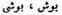ş eklinde yazılmaktadır. Sayın Prof. F. Sümer, kendileri de pek emin olmamakla beraber, yazının isimsiz geçmemesi için, farazi olarak Poştı okumuşlardır (Dil ve Tar. Coğr. Fak. Dergisi, 1959, 8. 363). Gerçi eski Uygur metinlerinde, Puşiçi, Çince Mu-shih, "hoca" gibi sözler vardır. Fakat Reşideddin çağı bir Türk ve Türkçe isimler çağıdır. Bu sebeple biz başka bir yolu deneyeceğiz:
Bu ad metinlerde umumiyetle 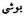 (Bûşi) şeklinde geçmekte ve Sayın Prof. Z. V. Togan'ın şifahî ifadeleri de bu yoldadır. Türk onomastiğinde bu yazılışa en uygun ad, Tûşî’dir. Yüşi de olabilir. Fakat böyle bir ad yayılmış değildir. Tüşi/Tuşı, Çingiz-Han'ın büyük oğlu Cöci'nin türkçe karşılığıdır. En emin kaynaklardan biri olan Nesevi’ye göre Hârezm beylerinden birinin adı Tuşı-Pehlivan idi (Houdas, terc., s. 96). Aynı beyi Reşideddin, Tucı diye adlandırır. Bu adın Tüşi mi; yoksa Tuşı mı olduğunu tespit edebilmek için yine Avrupa kaynaklarına bakmak lâzımdır. Avrupalı seyyahlar, umumiyetle Çingiz'in oğlu Cöçi'ye Tossuccan (>Tossu-can) derler (F. Riscb, J. von Piano Carpini, s. 385). Bu da meseleyi tamamen halletmez. Avrupalılar "ü" sesini telâffuz edemeyip, Tüşi yerine Tuşı/Toşı/Tosu diyebilmiş olabilirler. Cüveynî de Cöçi-Han'a Tüşi/Tuşı adını verir. Cüveynî, Cöçi'nin gerçek adını bilecek kadar Çingiz-Han ailesine yakındı. Fazla uzatmıyalım, türkçe Tüşi/Töşi Moğolca Cöçi adının bir karşılığı ve tabii olarak da Türkçe idi. Tıpkı Moğolca Çingiz ve Türkçe Tängiz adlarında olduğu gibi. Altınordu'ya seyahat eden bazı seyyahlar, Çingiz-Han'dan bahsederken, Çingiz yerine, Tängiz adını kullanmışlardır. Moğolların Gizli tarihi'nde de Tus-/Tüş-Han deyiminin sık sık geçtiğini görüyoruz. Pelliot, bu kelimeyi Tus okur (Histoire secrete, s. İS). Bu sözü Tüş de okuyabiliriz. Bu söz için verilen çince karşılık, "meşru hükümdar" manasınadır (YCPS, 149). Bizce Tüşi/Tuşı adının kelime manasını da buradan anlayabiliriz. Türkçe’deki Tüş kelimesi de aşağı yukarı aynı anlama gelir. Orta Asya'da Öğle vaktine "tüş" denmesinin sebebi de buradan gelir. Bk. Radlof, Wörterbuch, III, 1586. Bütün bunlar bize gösteriyor ki Tüşi/Tuşı adı, türk onomastiğinde önemli bir yer tutmuş ve saygı değer insanlara verilmiş bir ad idi.
Metinde bu ad 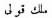 şeklinde yazılmıştır, Adın ikinci kısmı olan " -Kulı (=Kul-ı)" sözü anlaşılıyor. Fakat bu da Moğolca değildir. Baştaki sözü Mälik (?) okuma olamaz; çünkü bu da Arapça bir sözdür. Bununla beraber Mänglik-äçigä’nin adının birçok kaynaklarda kısaltılma suretiyle Mälik-äçigä yazılmış olduğunu biliyoruz. Tabii olarak mana bakımından bu da meseleyi halletmez (Pelliot, Gengis-Khan9 s. 77).
Türkçe Koca sözü, sonradan Hoca şekline girmiştir. Bu meseleyi Sayın Prof. Faruk Sümer isabetli olarak izah etmiştir (aynı esr., s. 363). Bu konu için ayrıca bk. B. Ögel, Sino-Turcica, s. 289. Hoca'lar devleti münasebetiyle: Ch’en Ch'ing-lung Doğu Türkistan Tarihi, Tai-pei, 1967, s. 6.
Kara-Sülek Sayın Prof. Faruk Sümer'in okuyuşudur (Aynı esr., aynı yer). Başka türlü okumak için de, ayrı bir yol ve imkân görünmüyor.
Kara-Şît, Oğuz-Han'ın Hindistan akınında da hükümdar olarak görülmektedir. Sayın Prof. Z. Y. Togan'ın çok ihtiyatlı olarak kullandıkları ifadelerine göre, Kara-Şat olarak bir tefsir yolunu arama, belki de faydasız olmayacaktır. Gerçekten bu unvanın izahı birçok güçlükler göstermektedir. Kaşgarî'ye göre "Şüt" sözü Hotan'cadır ve manası "soy, asıl" demektir (Kaşgarî, terc., III, s. 120). Kara sıfatıyla da geldiğine ve daima Oğuz-Han'ın düşmanı olduğuna göre, çok az bir ihtimalle belki de "Kara-soy, Kara-kemik, avam" padişahı manasına gelebilir. Tabii olarak biz burada nihayet, muhtemel olmasa bile mevcut malzemeye göre bazı örnekler sıralamak istiyoruz. Yoksa bu bizim kesin bir fikrimiz değildir.
Yine Hafız Abrû'da 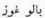 şeklinde Başgırdların bir başkentinden de bahsediliyor (Yap. 377 b). Baştaki kızım Bala-Sagun şehrinde, sonraki de Guz-Ordu'da görülen benzer sözlerdir. Son kısmı "-gur" eki de olabilir. Bu mesele de maalesef karanlık kalmaktadır. Burası, daha doğrusu bir kale adıdır.
Yer ve kişi adları, en doğru olarak 1653 nr.lı nüshada yazılmıştır. Bununla beraber bu göl adı, harflerin birbirine karıştırılması suretiyle yanlış istinsah edilmiştir. Meselâ bu yazılışta Kol sözünün bütün harfleri bulunduğu halde, sesler yer değiştirmiştir. 1654 Nr. lı nüshada bu yer adı 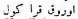 Uruk-Kara-Köl şeklinde yazılmıştır (Yap.. 630 b). Tabii olarak "Uruk-Kara" deyiminin izahı birçok güçlükler gösterir. Bunu "Ürüng-Kara" şeklinde düzelttiğimiz takdirde iki renk adı yanyana gelir ki, Türkçede böyle kompozisyonlara çok rastlanır. Tabii olarak bu da bir ihtimalden başka bir şey değildir.
Burada yine Oğuz-Han Çingiz gibi tasavvur edilmiştir. Çingiz-Han'ın her yağmada üzerinde titizlikle durduğu pay alma âdetinin, en eski Türklerde olup olmadığını bilmiyoruz. Şunu unutmamalıyız ki, Çingiz-Han eşkıyalıktan yetişmiş bir hükümdar idi.
Rubruck, Van den Wygnaert neşr., I, s. 219.
F. Risch, Johann von Plano Carpini, s. 309-310.
Marco Polo, bu bölgedeki kavimleri şöyle sıralar: Rosie, Comanie, Alanic, Lac, Mengiar, Çis, Gutia ve Gaçarie (H. Yule, The travels of Marco Polo, II, s. 498).
Moğolların Gizli Tarihi, Süböley-Bahadır'ın zapt ettiği ülkeleri ise şöyle sıralar: "Kanglin (Kanglı), Kibça'ut (Kıpçaklar), Bacigit (Başgırdlar), Orusut (Ruslar), Macarat (Macarlar), Asut (Aslar), Sasut (Saksın?), Serkesüt (Çerkezler), Keşmir (?), Bolar (Bulgar)... "(YCPS, 262). Bu duruma göre Başgırd'lar, Kanglı ve Kıpçaklardan sonra geliyorlardı. Başgırdların batısında da Ruslar vardı.
P.Pelliot, Horde d'Or, s. 128. Pelliot bu nazariyesini ileri sürerken, burada yeniden münakaşa etmek istemediğimiz Reşideddin'in bir kaydına dayanır. Bk. Berezin, Trudy, V, s. 51.
Cüveynî, I, s. 225.
Bu meselelerin münakaşası için bk. Pelliot, aynı esr., s. 124 v.d.
Ebülgazi Bahadır Han, Şecere-i Türkî Desmaisons neşr., s. 18-19.
Ağaç-Eri'lerin Oğuz-name'de geçen bölümleri için bk. Cami üt-Tevârih, Berezin neşr., I, s. 28-29. Göktürk yazıtlarında "Orman halkları"na Bökli il denir. "Bük" sözü bugün Anadolu’da da "orman" veya "ormancık" anlamına kullanılır. Moğolların "Orman halkları" ve "Hoyin-İrgen" tabiri için bk. Vladimirtsov, Moğolların içtimaî Teşkilâtı, s. 63. Ağaç-eri kabileleri ve bunların tarihi için de bk. F. Sümer, Oğuzlar, s. 146, 155,173n; T.T.K. Belleten, Sayı: 103, s. 523-528.
Oğuz-Han yeryüzünü aldıktan sonra memleketine dönmüş ve yurdunu düzene koymağa başlamıştır. Bu münasebetle, başlıca iki büyük toy yapmıştır. Bu toylardan birincisi, ordusu ve çocukları ile sağ ve esen yurduna döndüğü için düzenlenmiştir. İkinci toy ise, çocukları bir altın yay ile üç ok bulduktan sonra tertiplenmiş ve bu arada Oğuz-Han devletinin içtimai ve idarî teşkilâtı düzenlenerek, aralarında bir görev bölümü yapılmıştır. Reşideddin, birinci toya önem vermiştir. Uygurca Oğuz destanı ise, daha çok ikinci toy üzerinde durmuştur. Bizce bu konuda Uygur Oğuz destanı haklı olmalıdır. Çünkü birinci toy, zaferden dönüş şerefine yapılmış bir şenliktir. İkinci toy ve şenliğin ise sosyal bir anlamı vardır. Oğuz Han'ın çocukları devlet idaresinde görevlendirilirken ve devletin idare düzeni ile ilgili temeller atılırken yapılan şenlik, daha önemli olmalıdır. Bu sebeple, olayları sıralarken, Reşideddin’in Uygurca Oğuz Destan’ının olay sırasına getirmek istedik.
Reşideddin, büyük toy'u, altın yayla okların bulunuşundan önce yaptırmıştır.
R. R. Arat'ın tercümesi biraz müphemdir. Bu sebeple bu cümleyi kendi anlayışımıza göre genişlettik.
Câmi üt'Tevârih, Alizade neşr., I, a. yer.
R. R. Arat, aynı esr., 304-354.
Reşideddin, aynı yer.
Ebülgazi, aynı yer.
Oğuz-Han, oğulları arasında görev ve rütbeleri böldükten sonra, büyük bir kurultay toplar ve şenlik yapar. Direkler üzerine atış yapmak için tavukların konması vs. gibi hazırlıklar bu ikinci kurultay şenliğinde yapılır. Uygurca Oğuz Destanı ile Ebülgazi'de, birinci zafer şenliği ile ikinci kurultay şenliği birbirinden açık olarak ayrılmıştır. Reşideddin ve Hafız Abrû mecmuaları, bu iki şenliği birbirine karıştırmışlardır. Ebülgazi Bahadır Han, üstelik bu ikinci şenliği Gün-Han çağına koymuştur.
Desmaison neşr., s. 24; Kazan neşr., s. 16; Kononov neşr., s. 27.
Hafız Abru mecmuasına göre ise, Oğuz-Han, Semerkand ile Ak-dağı kendi veziri olan Kara-Sülek'e verdi. Kara-Sülek, başkomutan (Emir-i buzurg) oldu. Bu sırada İt-Barak kavminin isyan ettiği haberi geldi. Bu sebeple Kıpçak bölgesini ve o ülkelerin asayişini düzenlemek için oraya gönderdi. Kara-Sülek orada öldü. Bk. Tpk., Haz., Nr. 1653, yap. 384 a.
Hafız Abrû mecmuası ve Ebülgazi'nin istifade ettiği kaynaklar, adeta Oğuz-Han'ı Çingiz-Han'ın yerine koymuşlardır. Oğuz-Han'a tıpkı Çingiz-Han gibi akınlar yaptırmışlar ve teşkilât kurdurmuşlardır. Çingiz Han gibi, Kara-Sülek'e arazi verdirmişler, Uluğ-Noyan (Mog. Yeke-Noyan, Çin. Ta Chiang-chün) tayin ettirmişler ve tıpkı Sübötey-Noyan gibi Kıpçak ilini düzenlemeğe göndermişlerdir. Yukarıda da söylediğimiz gibi, Oğuz-Han Destanının esas bölümleri, Reşideddin'in muhtasar tarihi ile Hafız Abrû ve Ebülgazi’de aynıdır. Oğuz-Han'ın akınlarına ait bölümler ise, kitabın yazıldığı her çağın bilgilerine göre katkı görmüştür.
G. Nemeth, Attila ve Hunlar, Şerif Baştav terc., s. 149.
Gün-Han hakkında Reşideddin şöyle diyor:
"Oğuz-Han'ın ölümünden sonra, Gün-Han (Kün-Han) tahta çıktı. Oğuz-Han'ın veziri Yengi-Kentli Irkıl-Hoca idi. Irkıl-Hoca, Gün-Han'ın da veziri, yol göstericisi ve bir öğreticisi oldu. Bu vezir bir gün Gün-Han'a şöyle dedi:
- "Oğuz-Han, çok büyük bir hakan idi. Yeryüzündeki ülkeleri zapt etmiş ve böylece hazinelere, kıymetli mallara ve sayısız sürülere sahip olmuştu. Ölürken de onları sizlere, yani oğullarına bırakıp gitti. Sizlerin de Allah’ın emri ile dörder tane değerli oğullarınız oldu. Korkarım ki bu çocuklar, dünya malı ve mülkü yüzünden birbirine düşman olacaklar ve kendi aralarında hep savaşıp duracaklardır. Bence her birinin ayrı ayrı birer mevki ve makama tayin edilmesi ve bunlara göre de onlara birer ad ve unvan verilmesi uygun olacaktır. Her birinin ayrı ayrı birer nişanı ve damgası da olsun. Bundan sonra her biri, kendi fermanlarını, hazinelerini, sığır ve diğer hayvanlarını bu damga ve nişanlarla birbirinden ayıracak olursa, aralarında anlaşamamazlık olmayacak ve kavga etmeyeceklerdir."
"Gün-Han, Irkıl Hocanın bu fikrini doğruladı. Bu işin uygulanmasını da Irkıl-Hoca'ya bıraktı. Irkıl-Hoca da bu işi başarmağa çalıştı.
"Oğuz-Han'ın altı oğlunun Boz-ok ve Üç-ok diye ikiye ayrılmasından ve ordunun da sağ ve sol kollarının onlara verilmesinden sonra, bu çocukların soylarına da yeni adlar ve ünvanlar verildi. Ayrıca her birinin künyesi, damgası ve nişanı oldu. Bu şeyler onlara resmen verilmiş idi." (Cami üt-Tevârih, Alizâde neşr., I, s. 116).
Irkıl-Hoca'nın Yengi-Kent'li oluşunu ilk defa tespit eden, değerli meslektaşım F. Sümer olmuştur (D.T.C. Fakültesi Dergisi, 1959, s. 363). Hafız Abrû mecmuası, Oğuz-Han'ın kendi sağlığında bir şehir kurduğunu ve bu şehre de Yengi-Kent adını verdiğini, Irkıl-Hocanın da bu şehrin beği olduğunu yazıyor: "Irkıl" sözünün anlamı da 'her şeyi kendine çeken" demek imiş (Tpk., Haz. Nr. 1653, yap. 384 b; F. Sümer, aynı esr., s. 363).
Burada Irkıl-Hoca Oğuz-Han'ın 30 çocuğundan bahsediyor. Kaşgarlı Mahmud 22 boydan söz açar. Kaşgarlı Mahmud'un söylediği boy sayısına göre 8,24 boy olduğuna göre de, daha 6 boy noksandır. Bizce an'anevî sayı 24 dür. Belki bunlara, Kanglı, Kıpçak, Uygur Kalaç, Karluk, Kalaç gibi boylar da ilâve edilebilirse de, kaynaklarda açık olarak bunlar Oğuz-Han'ın neslinin dışında bırakılmaktadırlar.
Burada eski Türk devlet düşüncesinin güzel bir örneğini görüyoruz. Eski Türk devletlerinde ve hatta Çingiz-Han çağında devlet, hükümdarın bir malı gibi kabul edilirdi. Ögödey ulusu, Çağatay ulusu veya Cöçi ulusu terimleri, hükümdarın çocuklarına verdiği veya pay ettiği bölge ve halkları ifade eden sözlerdir. Eski Türk devletlerinde idare zorunlukları dolayısıyla bazı farklı tayinler yapılmıştır. Fakat devlet içinde birinci derecede hak sahibi olan kimseler, hükümdarın çocuklarıdır.
Altın, hakanlara mahsus bir alâmettir. Altay masallarında da Han'lardan söz açılırken, "Altın yatakta yatan, gök kısraklı Han" diye, hükümdarın özelliklerini gösteren tasvirler yapılır (Radlof, Proben, I, s. 4). Bilindiği üzere Gök "Kök" rengi de, kutsal ve Tanrı ile ilgili bir renktir. Yine Altay masallarında bazı efsanevi çocuklar, tuttukları avları halka dağıtıyorlar ve fakirlere iyilik ediyorlardı. Bunlar da, "Yarısı altın, yarısı da gümüş çocuklar" idiler (Radlof, a. esr., I, 6). Bu çocuklar da, hem halkın ve hem de hükümdarın alâmetlerini kendilerinde toplamış kimseler olmalıydılar. Kuzey Asya masalları, Tanrı ile ilişiği olan kutsal atları tarif ederken, yine altınla gümüş örneklerinden söz açarlar. Mesela, "Altın yeleli, gümüş üzengili, kuyruğu 9 örmeli, 9 kolanlı at" gibi (Radlof, a. esr., I, s. 2). Anadolu masallarında da "Altın =Padişah", "Gümüş = Vezir, vüzera", "Tunç = Halk" olarak gösterilir (Naki Tezel, İstanbul Masalları, İstanbul, 1938, s. 127-130; Halk Bilgisi Haberleri, 2, s. 226; W. Eberhard, Türk. Volksmärchen, s. 281).
Türklerde gümüş de soylu kişilerin ve kabilelerin bir sembolüdür. Fakat bu soyluların altın sembollü asillerden farkı, "hükümdar ailesinden" gelmemeleridir.
Uygurca Oğuz Destanına göre bu toyu ve atış talimlerini Oğuz-Han yaptırmıştır:
"Oğuz-Kağan büyük bir kurultay topladı.. Beylerini (nöker), halkını (il-kün) yarlık verip çağırdı. Herkes geldi. Danışıp konuşup (kengeşip), oturdular. Oğuz-Kağan, büyük bir ordugâh (kurdurdu)... Sağ yanına kırk kulaç bir direk (ığaç) diktirdi. Üstüne bir altın tavuk koydurdu. Altına bir ak koyun bağladı. Sol yanına kırk kulaç bir direk diktirdi. Üstüne gümüş bir tavuk koydurdu. Dibine bir kara koyun bağlattı. Sağ yanda Boz-ok'lar oturdu. Sol yanda Üç-ok'lar oturdu. Kırk gün, kırk gece yediler, içtiler ve sevinç buldular..." (R. R. Arat, aynı esr., 358-370).
Her yerde olduğu gibi, burada da Uygurca metni kendi anlayışımıza göre tercüme etmiş bulunuyoruz. Yukarıda da bir kaç defa söylediğimiz gibi Ebülgazi Bahadır Han, Türkmen Şeceresi'ni yazarken Uygurca Oğuz-nâme'yi veyahut da onun daha geniş bir nüshasını görmüş olmalı idi. Çünkü Türkmen Şeceresi ile Uygurca Oğuz destanı arasında birçok benzerlikler vardır. Yalnız Uygurlar, Oğuz-Han'ı bir "Uygur Kağan'ı" olarak kabul etmişlerdir. Ebülgazi Bahadır Han ise, Oğuz-Han'ı Türkmenlerin atası olarak görür. Ayrıca Uygurca Oğuz-nâme kısadır. Direklerin niçin dikildiğini ve başlarına tavukların neden konduğunu da söylememiştir. Türkmen Şeceresi, bunların bir ok atış yarışması maksadı ile konduğunu göstermektedir. Koyunların rengi de önemlidir. Sağdaki direğe, yani Bozok'ların tarafına "Ak" koyun'un bağlanmış olması, Bozokların asaletini gösteren bir semboldür. Bunların koyun değil de Koç olmaları daha muhtemeldir. Proto-Moğollardan sayılan Kitan'larda imparatoriçenin doğum merasimi ile diğer törenlerde kullanılan ak koçların da böyle dinî ve içtimaî birer anlamlan vardı. Bu konu ile Proto-Moğol mitolojisi ile ilgili bölümümüzde ilgilenmiştik.
Buradaki, "9, 90,900,9.000" rakamları da Türklerin dinsel ve efsanevî rakamlarıdır. Türk ve Moğolların esas kutsal rakamları "Dokuz" idi. Batı Türklerinde, yine Batının tesiri ile bu kutsal sayı zaman zaman "Yedi" olmuştur. Bu rakamları, Türklerin "Cosmos" hakkındaki düşüncelerini incelerken yine ele alacağız. "Kırk gün, kırk gece" düğün veya şenlik yapma sözü, Orta Asya’da olduğu gibi (Radlof, Sibirya'dan, A. Temir terc., I, s. 403); Anadolu'da da yaygın bir terimdir.
Üstat P. Pelliot'ya göre Kün-Han, "Güneş Han'ı = Roi du soleil", Ay-Han, "Ay Han'ı = Roi de la lune", vs. dir (Horde d'or, s. 27 ve n.). Fakat böyle anlamak için bir sebep ve imkân yoktur. Burada Gün, Ay, Deniz vs. birer sıfattırlar. Oğuz da belki başlangıçta, oğullarının adlarındaki gün ay ve gibi bir sıfat idi.
Oğuz boylarına ait adların etimolojisini ayrı bir bölümde incelemiştik.
Kâna ve Küna boylarının mahiyeti pek anlaşılmıyor. Orta Asya’da Kence (Radlof, Sibirya'dan, I, s. 238), Kum (Aristov, Zamelki, s. 384), Kün-delen (Aynı esr., s. 367) gibi boylar vardır. Fakat bu adları taşıyan boylara rastlayamadık. Türkçede Kene, "köpek biti" (Radlof, Wb„ II, s. 1075), Kene-Hane, "Hapishane hücresi" (Lug. Çagatayî, s. 255; Radlof, II, s. 1075), farsça kine'den Türkçeye girmiş Kine, "öc ve intikam" (Radlof, II, s. 1346), aynı anlamda küne (Tar. Sag.) (Radlof, II, s. 1439) sözleri vardır. Fakat bu boy adlarını bu Türkçe sözlerle açıklamağa kalkışmak, oldukça güç ve tehlikeli bir iş olur.
Turbatlı boyuna da Orta Asya kabileleri arasında rastlamıyoruz. Orta Asya’da Turubay (Aristov, aynı esr., s. 382), Turpey (Aynı esr., s. 428) adlı kabileleri görüyoruz. Belki Kalmuklardan Türböt'lerle de bir ilgileri olabilir. Fakat adın şekli Türkçeye benzemektedir. Çağatayca’da durbat- fiili, "düşman tarafından mağlup edilmiş olma" anlamına gelir (Lug. Çagatayî, s. 171; Radlof, III, s. 1791). Acaba bu fiil kökünden yapılan bir boy adı mıdır? Tabii olarak bu konuda kesin olarak bir şey söylemek çok güç ve tehlikeli olur.
Kerey ve Girev boylarına Orta Asya’da çok rastlıyoruz (Aristov, Zametki, s. 379; R adi of, Sibirya dun y II, s. 65). Bu kabile adı, daha ziyade Çingiz-Han çağından sonra ortaya çıkmıştır.
Orta Asya’da Sultan-gildı, Sultanskiy gibi, adları oldukça bozulmuş boyları görüyoruz (Aristov, aynı esr., s. 362, 385). Bk. F. Sümer, Oğuzlar, s. 140.
Orta Asya’da Oktı (=Oklı) adlı bir kabileyi tanıyoruz: Aristov, aynı esr., s.379. Oklu kabilesi için ayrıca bk. F. Sümer, Oğuzlar, s. 139.
Aklan, Kökten kabile adlarında olduğu gibi, bunun da Kök (Gök) sözünden yapılmış olması muhtemeldir.
Bu da Suç sözünden yapılmış bir kabile adı olmalıdır. Fakat Orta Asya kabileleri arasında, bu boyun adı yoktur.
Horasanlı boyu için bk. F. Sümer, Oğuzlar, s. 140.
Orta Asya’da Torum/Turum adlı bir kabile tanıyoruz (Aristov, aynı esr., 380).Torum/Turum (Çag.), "iki yaşındaki tay" anlamına gelir (Radlof, III, s. 1456).
Bu boy adına da, Türk boyları arasında rastlamıyoruz. Belki de "Çöllü" anlamına geliyordu. Kelimenin diğer manaları için bk. Radlof, II, s. 667.
Kızıl boyları arasında bir Kurçık soyuna rastlıyoruz (Radlof, Sibirya'dan, I, s. 211). Kırgızlarla karışmış bir boydur ve Türkmenlere çok uzaktır. Ayrı nüshalarda. Kuarcık şeklinde de yazılmıştır. Kurçık, Kurçuk (Çag.), "dervişlerin keçe külahlarına sardıkları şeritlerle, büyük çadır perdelerine" de denirdi (Radlof, II,s. 955).
Karaca/Karaça adlı boylar çoktur. Karaçı, biraz da Orta Asya Çingenelerine verilen bir addır (Radlof, II, s. 162). Kımız mütehassısı ve iyi kımız yapan kabilelere de bu ad verilirdi (Pelliot, Journ. Asiatique, 1920, I, s. 169-171). Çünkü bu kabileler cins, siyah renkli atlar beslerler ve en iyi kımız da bu siyah kısraklardan elde edilirdi. Boyun adı Karaçık da olsa, pek asil bir toplum olmadığı bu adından da anlaşılabilir. Bundan sonraki kabilenin adı Kazgurt'dur. Adını bir yer adından almıştır. Karaçık'ın da, Karaçuk dağı'nın adından alınmış bir boy adı olması muhtemel görülebilir.
Kazgurt, genel olarak bir yer adı olarak geçer. Oğuzların önemli yaylalarından biridir. Burada ise karşımıza kabile adı olarak çıkmaktadır. Herhalde bu kabile de adını bu dağdan almıştı. Kazgurt sözünün etimolojisi de karanlıktır. Kırgızca’da Kaskır, "kurt" anlamına gelir. Kaskırdı (=Kaskır-lı), yani "Kurtla dolu yer", demektir (Radlof, II, s. 354). Bunları birer misal olarak vermekle, nihayet aydınlığa kavuşmak için bir yol arıyoruz. İhtimaller çok oldukça, bunlar içinde birini seçmek bizim için daha kolay olacaktır. Kanaatımızca bu söz, Kaz-gurt/Kas-gurt şeklindeki bir türeyişten meydana gelmişti. Çünkü Türkçede bir "-gurt" eki mevcuttur.
Teken boyunun adı diğer nüshalarda Teke yazılmıştır. Bunun Teke okunması daha doğru olacaktır (Radlof, III, s. 1016). Esasen Teke Türkmen'lerinin varlığını da biliyoruz.
Lala sözü eskiden Atabek anlamına gelirdi (Lehç. Osmani, s. 749).
Murdaşuy'un manası pek anlaşılmıyor. XIII. asrın başında Almalıg beyi bir Ozar vardı. Çok cesaretli olması sebebiyle ona "Merd-i Şuca" lâkabı takılmıştı (Cüveynî, I, s. 21, 48...). Bu lakapla ilgili bir kabile adı olması muhtemeldir.
Burada Türklerin içtimaî tarihi bakımından çok önemli bir konuya gelmiş bulunuyoruz. Bu bölümden anlaşıldığına göre, yirmi dört Oğuz Boyunun da arasında bir sınıflandırma vardı. Bu derecelerin daha iyi anlaşılması için aşağıya şöyle bir liste çıkardık. Üçüncü sınırdaki kabileler arasında, hem nikâhlı olmayan kadınlardan doğan çocuklardan türeyen soylar ve hem de Oğuz-Han'ın yalnızca ad verdiği ve kendi kanını taşımayan Kanglı ve Kıpçak gibi kabileler girmiştir. :
| BOY'UN BABASI |
BOY'UN ADI |
Oğuz olan BAĞLI BOYLAR (Eti doğrayan) |
Oğuz olmayan BAĞLI BOYLAR (Atları tutanlar)
|
| I.Kün-Han I.Kün-Han II.Ay-Han II.Ay-Han III.Yulduz-Han III.Yulduz-Han IV.Kök-Han IV.Kök-Han V.Tağ-Han V.Tağ-Han VI.Tenggiz-Han VI.Tenggiz-Han |
1. Kayı 2. Alka-evli 3. Yazır 4. Doğurğa 5. Avşar 6. Beg-Dili 7. Bayındır 8. Cavuldur 9. Salur 10. Ala-yuntlı 11. İğdir 12. Yıva |
Bayat Kara-evli Yıpar Döger Kızık Karçın Becene Cebni Eymür Üregir Bügdüz Kınık |
Sorkı Lala
Murdaşay Turumçı (Torumçı) Karaçık Kazğurt (Kazığurt) Kanglı Kalaç Teke (veya Teken) Karlık Kıpçak |
Arka bacak demektir. Bu deyimler, sondaki izah kısmımızda açıklanmıştır.
Umaca, "kalça ve sağrı kemiği" (Os ischium) demektir. Bk. Radlof, I, s. 1167; Redhouse, s. 270.
Sol arka ayak demektir.
"Yüzlük" deyimi, burada askerî teşkilâtla ilgili olmalıdır. Ebülgazi bunu, sonradan kabile teşkilâtlarında görülen Yüz/Cüz deyimi ile karıştırıyor.
Aymak deyimi, burada daha ziyade Moğol telâffuzuna göre yazılmıştır. Bizce bu sözün aslı Anadolu lehçelerinde en doğru bir şekilde söylenen oymak ( =oymak) deyimi olmalıdır. Omak ile Oymak’in aynı kökten gelip gelmedikleri konusunda burada bir şey söyleyemeyeceğiz. Çünkü, Reşideddin'e göre obak, oba sözleri de omak'dan gelir (Berezin neşr., tere., I, s. 136). Uygurcada omak sözü, "soy; nesil; kan bağı bulunan akraba" anlamına gelir (Çin.-Uyg. Sözlük, s. 92 b; Radlof, I, s. 1166). Bunun yanında Moğolcadaki Oima’udai, 0ima’ut kişi ve kabile adları herhalde Türkçedeki "oy-ma, -mak" kök ve ekleri ile ilgili olmalıdır. Çünkü Moğolcada ne böyle bir kök ve ne de ek vardır. Ayimak/Aymak deyimlerini de Moğolca ile açıklamak güçtür. Fakat bu terim, Orta Asya’daki Moğol ve Kalmuk hâkimiyeti sebebiyle, Türkçeye yeniden girmiştir. Mesela, halâ Altaylılar, Aymak sözünü, "yabancılar ve Moğollar" için kullanırlar (Radlof, I, s. 63). Ebülgazi de, Oğuz-Han'ın neslinden gelmeyen, tabî, daha doğrusu onun deyimi ile koşulmuş kabileler için aymak sözünü kullanır. Böyle bir adlandırma onu da tatmin etmemiş olacak ki, sözünü değiştirir ve yeniden öz Türkçe önemli bir deyim olan Kara-ulus tabirini, koşulmuş kabileler için kullanır.
Omak sözünün Türkçe asıldan mı; yoksa Moğolcadan mı geldiği henüz daha incelenmiş değildir. Yalnız urug/uruk deyimi çok eskiden beri Türkçede görülür. Eski Türkçedeki urug-turıg, yani "akrabalar" deyimi (Kaşgarî ,terc., I, s. 64), halâ Anadolu’da uruk-derik şeklinde söylenir. Edgü urug, "iyi, seçkin soy" (Kutadgu-Bilig, R. Arat neşr., s. 27, 108) uruglıg, "iyi soydan olma"; urugsız, "aşağı soydan kişi" anlamlarına gelir (Radlof, I, s. 1659). Moğolcaya da girmiştir. Bk. Pelliot, Gengis-Khan, s. 32.
Üç, altı, on iki, yirmi dört rakamlarını bir zaman ve içtimâi teşkilât düzeni olarak, bu kitabın "Türk kozmogonisi" başlıklı bölümünde inceleyeceğiz.
Yirmi dört Oğuz boyunun ongun’ları olan bu kuş adlarını, bu kitabımızın ayrı bir bölümünde incelemiş bulunuyoruz.
Nayman Han'ı Tayang-Han Moğolların kuvvetlenmesi üzerine şöyle diyor : "Gökte güneş ve ay gibi iki parlak şey varsa da, yeryüzünde iki Han barınamaz!" (Moğ. Gizli Tarihi, 189). Bu, daha ziyade Çin'den gelen bir devlet ve hükümdarlık anlayışıdır. Çinliler de, "Gökte iki güneş, yeryüzünde de iki tane hükümdar olamaz derler. Fakat kurada Ebülgazi'ııin verdiği bu atasözleri, Türk kültürü bakımından büyük bir değere sahiptirler.
Farsça Oğuz destanı, Kün-Han'ın hemen sonra Dib-Yavku'yu tahta çıkarır ve Oğuz Yabgularının tarihine başlar (Yap. 385 a; F. Sümer, s. 369). Ebülgazi, şeceresini doğru kurmuştur. Çünkü Kün-Han'dan sonra tahta çıkma hakkı büyük oğlu Kayı'nındır. Bu duruma göre iki ihtimal vardır. Ya Ebülgazi kendi mantığına ve Oğuz töresine göre bu şecereyi bizzat kurmuştu. Veyahut da elindeki Oğuz-nâmelerde soy kütüğü böyle aralıksız olarak yazılmıştı. Kayı-Han'ın saltanat süresinin bile yazılmış olduğuna bakılırsa, herhalde Ebülgazi'nin elindeki Oğuz-nâmelerin böyle dediğine inanmak lâzım gelecektir.
Ebülgazi'nin Türkmen Şeceresi'nde "Destan üslûbu" daha çok görülür. Farsça destan ise olayları, sanki gelmiş geçmiş, bilinen devlet büyüklerine ait biyografyaları anlatıyormuş gibi ele almaktadır. Bu farsça metinde, Çingiz-Han ile devletinin tesirleri de gözden kaçmamaktadır. Çingiz-Han, gerek devletini kurarken ve gerekse kurduktan sonra, harplerin dışında ve bilhassa devlet idaresinde, birinci derecede vergi işlerine önem vermişti. Mahmud Yalavaç, Mes'ud Beg, Cin-Temür, Argun-Aka vs. gibi vergi toplayan büyük memurların devlet içindeki birinci derecede önemleri bilinen gerçektir. Farsça metin de Kün-Han'ın oğlu Dib-Yavku'nun, daha devletin başına geçer geçmez, vergi işlerini konuşması ve bunu bir düzene sokmak istemesi, eski destanî Oğuz-nâme'lerin üslûbundan olmasa gerektir.
Farsça destana göre, Kün-Han'ın oğlu Dib-Yavku birgün, divanda bulunan beylere, dedesi Oğuz-Han'ın nereleri ve nasıl zapt ettiğini sormuş. Yanında bulunan Salur ilinden Ulaş oğlu Ulat (?) dizini yere vurarak şöyle demiş : "Atalarımız doğudan batıya kadar uzanan ülkeleri zapt etmişti. Biz seninle beraberiz. Bu ülkelerden vergileri toplamak için harekete geçeceğiz. Bize tabi olmayanlar bulunursa, onları savaş yolu ile öyle bir yola getireceğiz ki, atalarınızın ünü eskisi gibi kalacak ve hiç kimse size vergi vermekte ihmal göstermeyecektir. Dib-Yavku, bu beyin sözlerinden memnun kalmış. Baba ve oğul olan bu iki beyin sözlerini tutmaz ise, ilini ve hanlığını koruyamayacağını düşünerek, onlara tam bir güven ile bağlanmış" (Yap. 385 a; F. Sümer, a. esr., s. 369).
Salur ilinin beyi Ulaş ile oğluna devlet işlerinde büyük bir önem veren Dib-Yavku, kendisini destekleyecek daha kimlerin bulunduğunu sormuş. Onlar da aşağıda adı geçen beylerin adlarını söylemişler
Farsça destana göre, Salur ilinden Ulaş ve oğlu, Dib-Yavku'ya, yukarıda adı geçen diğer beylerin de her zaman kendisi ile beraber olacaklarını ve nerede düşman var ise, ona karşı hep beraber yürüyeceklerini söylemişler. Bu sözler de Dib-Yavku'nun hoşuna gitmiş ve bunlar benimle aynı anlayış ve düşüncede olurlarsa, yapacağımız işlerin sonucu iyi olur, demiş. Bunun için de bu beyleri yanına çağırmış.
Görülüyor ki bu metinler, Oğuz Destanında olduğu gibi bir cihan imparatorundan ziyade, çekingen bir il beyine aittir.
Yine Dib-Yavku, adı geçen beyleri ve oğullarını Gûrk-ı Başgurd, Fars, Kirman, Isfahan, Bağdat ve Bursa illerine gönderiyor ve bu illerden eski ve yeni vergileri toplatıyor. Atalarına olduğu gibi, Dib-Yavku'ya da dünyanın dört bir tarafındaki hükümdarlar baş eğiyorlar (Yap. 385 b; F. Sümer, a. esr., s. 370).
Eski Türk devletlerinde devletin arazisi ve idaresi, Kağan’ın oğulları ile yakın kan akrabalığı olan kimseler arasında paylaşılırdı. Burada ise beyler ve oğulları bu ülkelere gönderilmektedirler. Hafız Abrû Mecm.’daki metin birinci derecede önemi, devlet işlerinden ziyade vergi meselelerine vermiştir. Bu konuda, Çingiz-Han ve devlet idaresinin görünen tesirlerinden söz açmıştık. Manas Destanında da, devlet idaresinden hemen hemen hiç bahsedilmez. Yalnızca gelen hediyelerden ve yapılan yağmalardan söz açılır. Bu farsça metin, öyle anlaşılıyor ki, edebî bir destan metnini kurutarak bir tarih sahifesi hâline sokmuştur. Ebülgazi ise, Oğuz destanının üslûbundan ve destan dilinden kurtulamamış veya kurtulmak istememiştir.
Farsça destana göre Dib-Yavku, bir müddet hükümdarlık yaptıktan sonra, Uzak-Doğu'da neresi olduğunu tespit edemediğimiz bir ülke isyan ediyor. Oraya bir akın yaparak, orasını da kendisine bağlı kılıyor. Bk. Yap. 385 b; F. Sümer, a. esr., s. 370.
Bu akınla da, Oğuz-Han'ın Altan-Han ve Cürçet savaşlarına yerinilmek istenmektedir.
Yine Farsça destan Dib-Yavku'nun bir gün atının ayağının takılıp düştüğünü ve kalça kemiğinin kırılması suretiyle öldüğünü yazıyor (Yap. 385; F. Sümer, s. 370: Uyluk kemiği.)
Bk. Radlof, I, s. 1684.
Yap. 385 a; F. Sümer, s. 369.
Kaşgarî, terc.. I, s. 213.
Yap. 385 b; F. Sümer, aynı yer.
Pelliot, Gengis-Khan, s. 347.
Yap. 385 b; F. Sümer, s. 375.
Moğ. Gizli Tarihi, 198; Pelliot, aynı esr., s. 73.
Radlof, I, s. 354.
Aynı esr., aynı yer.
Aynı esr., I, s. 353.
Radlof, Sibirya'dan, terc., I, s. 151-52.
Kaşgarî, terc:, I, 8. 413.
Brockelman, Çenkşi okuyor (Wortschalzt, s. 242).
F. Sümer, 8. 370 ve n.
Marquart, Über das Volkstum der Komanen, 8. 171. Ayrıca bk. Houdas, terc., s. 286.
A. Cafer oğlu, Uygur Sözlüğü, s. 43.
L. Hambis, T’oung-pao, 1945, s. 63.
Bu ek için bk. A. Von Gabain, Alttürkische Grammatik, s. 63.
Meselâ, Türü-, "toplanmak" (Radlof, III, s. 1558; Kaşgarî, terc., I, s. 139). "Dürmek", "yaratmak" anlamına birçok fiil kökleri vardır.
Cüveynî, I, s. 66.
Kaşgarî, I, s. 62.
Radlof, I, s. 353. Türk ve Moğol söylenişleri için bk. Pelliot, Gengis-Khan, s.270.
Bk. Rasony, Belleten (T.T.K.), sayı: 39, s. 420.
Farsça Oğuz destanında bu yabgunun adı Kurs (?) Yavku şeklinde yazılmıştır (Yap. 385 b; F. Sümer, s. 370). Bu adın mahiyeti pek anlaşılmıyor. Kuzı ad veya ünvanının da mahiyeti pek anlaşılmıyor. Bu kelime Furi veya Böri de olabilir. Furi veya Böri kabilesi üzerindeki münakaşalar için bk. Marquart, aynı esr., s. 47 v.d.; Hudud al-âlâm, s. 84, 283. Pelliot'a göre bu kabile adı Kurı veya Korı okunmalıdır (Gengis-Khan, s. 62). Farsça Oğuz destanına göre bu Yabgu, 39 yıl hükümdarlık yapmıştı. Ebülgazi ise 30 yıl süren bir hükümdarlığından bahsediyor.
Burada Yavku unvanı üzerinde de biraz durmak istiyoruz. Farsça Oğuz Destanında bu ünvan hep Yavkuy şeklinde yazılmaktadır (Yap. 385 a). Ebülgazi'nin ise unvanın esas mahiyetinden haberi yoktur. Daima Bakuy (?) olarak yazar. Bu bakımdan, Farsça Oğuz destanı, daha sağlam bir kaynaktır. Reşideddin de çoğu zaman Bakuy yazmıştır (Breezin neşr., I, s. 14). Arapça nüshalarında Yakuy veya Yakvı şeklinde yazılışları da vardır. Kaşgarlı Mahmud, bu ünvanı Yafgu olarak yazmıştır. Bu yazış tarzı nihayet bir lehçe farkından ileri gelir. Meselâ boy adı, Avşar'ı da Afşar yazmıştır (Kaşg., Kilisli neşr., I, s. 57). Aynı kaynakta yava, yafa ve yavaş da, yafaş olmuştur. Bundan da anlaşılıyor ki, Doğu Türklerinin Yafgu dedikleri bu ünvan, Batı Türklerinde Yavku/Yavgu şeklinde telâffuz ediliyordu.
Farsça Oğuz Destanına göre, bu Yabgu'dan sonra Yavku geçmiştir (Yap. 385 b; F. Sümer, s. 370). Ebülgazi de bu Yavku'nun adı geçmiyor. Fakat başlangıçta, "Kuzı-Yavku Han 30 yıl padişahlık yapıp öldü" dedikten sonra, vezirlerini saymağa başlar ve yeniden aynı hükümdarı 120 yıl Han yaptıktan sonra, tekrar öldürtür. Bundan da anlaşılıyor ki, Ebülgazi’nin şeceresinde, bir padişah soyu ortadan kalkmış oluyordu. Bu duruma göre, Farsça Oğuz destanındaki soy kütüğü daha doğru olmalıdır.
Radlof, Uigurische Sprachdenkmäler, s. 285.
Radlof, Wörterbuch, II, s. 187.
Radlof, Aynı esr., II, s. 188.
Aynı esr., II, s. 1501.
Bk. Faruk Sümer, aynı esr., s. 370.
Reşideddin, Türkmenlerin meydana gelişini şöyle anlatıyor: "Oğuz-Han'la beraber olup, onu destekleyen kavimleri yukarıda söyledik. Eskiden Oğuz-Han'ın yanında olan ve onu destekleyen halkların hepsine Uygur adı verilirdi. Fakat bu Türklerin çoğu, ayrı ayrı adlar alarak ayrıldılar. Bundan sonra artık, yalnızca geriye kalanlara Uygur dendi. Oğuz-Han'ın oğullarından yirmi dört boy türemiştir. Aşağıda da söyleneceği üzere bu boyların hepsi, ayrı ayrı adlarla belirtilmişler ve birbirlerinden ayrılmışlardır. Bu gün yeryüzünde yaşayan Türkmenlerin hepsi, bu adlarla adlandırılan ve Oğuz-Han'ın yirmi dört oğlunun soylarından gelen kimselerdir. Türkmen sözü, daha eski çağlarda yoktu. Türklere benzeyen bütün göçebe boylara Türk derlerdi. Tabii olarak, bunun dışında da her boyun bir adı vardı. Oğuz boyları, kendi yurtlarından, çıkıp, İran ülkelerine gelince, buralarda yaşayıp, çoğaldılar. Bu yeni yurtlarının suyu ve havası gereğince, şekilleri de değişti. Onların biçimleri acemlerinkine benzedi. Onlar aslında Acem değillerdi. Bunun için de Acemler onlara, Türk’e benzedikleri için Türkmen dediler. Bu sebeple Oğuz boyları, artık bu adla adlandırılmağa başlamışlar ve hepsi de Türkmen adı ile adlandırılmışlardı." (Alizade neşr., I, s. 111-120).
Keyomert veya Keyomers, Âdem Aleyhisselâm gibi İran'ın ilk insanı ve ilk padişahıdır. Ebülgazi, Oğuz-Han'ı Keyomert zamanına koyuyor. Bu suretle, Oğuz-Han'ın ataları da, İran'ın bu ilk padişahından eski olmuş olacaklardır. Bu suretle Türklerin menşeine, İran’ınkine nazaran bir öncelik verilmiş oluyor.
Bu konu, daha önceki bölümümüzde incelenmişti.
Bu ad Çeçekli olsa gerektir. Uygur'larda Ay-Çeçek (F. W. K. Müller, Pfahlin-schriften, s. 10), Kır-Çeçek adları geçmektedir (Radlof, Uig. Sprachdenkmaler, s. 282). Dede Korkut Kitabında da Banu-Çeçek adı vardır. Genel olarak kadınlara verilen bir addır.
Engeş, Kuzı-Yavku Han'ın Salur ilinden inen veziri idi. Şimdi burada Salur-Kazan’ın adamı olmuştur. Böyle haller, Türk Mitolojisinin bir özelliğidir. Han-nâme'de de görüleceği üzere, eski büyük bir padişahın meşhur bir veziri ölmüyor ve sonraki padişahlara da yol gösteriyordu.
Reşideddin'in, Türkmenlerin menşei ile ilgili metnini, bu bölümün başındaki notlara koymuştuk. Bk. not. 71.
Farsça Oğuz destanına göre, 120 yıl yabguluk yapmış ve sonra ölmüştü. Yine aynı destanda, Korkut-Ata, Inal-Yavku'nun değil, torununun veziri idi (Yap. 385 b; F. Sümer, s. 371). Ebülgazi, burada bir Yabgu neslini yine atlamıştır.
Farsça Oğuz destanında bu kişinin adı geçmemektedir. Bu çağda Oğuzlar henüz daha Müslüman olmamışlardı. Farsça Oğuz destanına göre, Oğuzlar ilk defa, Doylı-Kayı zamanında Müslüman oldular. Doylı-Kayı, bu Ali'nin kardeşidir. Ebülgazi'nin bazı nüshalarında Ali'nin adı Al şeklinde yazılmıştır. Ali adı, eski Türkçe Al'ın müslümanlaştırılmış bir şekli olmalıdır. Çünkü Türkmen Şeceresinin son kısmında geçecek olan Ali-İIi, Orta Asya halklarının birçoklarınca Al-İli şeklinde söylenmekte ve Rus etnograflarının birçokları da, bu tanınmış Türkmen kabilesinin adını Al-İli şeklinde yazmaktadırlar (Aristov, Zametki, s. 416). Bu meselenin münakaşasını üstad Pelliot da yapmıştır. Üstada göre Türkler arasında, İslamiyet’ten önce kullanılan bir Alı adı vardı. İslamiyet’i kabul eden Türkler, bu eski Alı adlarını hemence, Arapça Ali'ye çevirdiler (La Horde d'or, s. 197, n.). Bu çok önemli bir görüştür. Kubilay-Han'ın meşhur Beş-Balıg'lı Uygur generali Ali-Kaya'nın adını incelerken, biz de aynı görüşü savunmuştuk (B. Ögel, Sino-Turcica, s. 131-142). Alinak adlı meşhur bir Moğol generali vardır. Marco-Polo'nun "Alinac", İran kaynaklarının bir çoklarınca da Alinak/Alınak, şeklinde yazılan bu Moğol emirinin adı, bu bakımdan üzerinde durulacak bir örnektir (Aksarayî, O. Turan neşr., s. 142; Reşideddin, K. Jahn neşr., I, s. 83). Reşideddin, Alinak'ın adını bazı yerlerde Ali-İnak şeklinde yazmıştır (Berezin, Trudı, V, 106). Bu kumandan Kereit kabilesinden idi. Kendisi de Müslüman olamazdı. Çünkü Kereitler Hıristiyan idiler. Bu adın, Türkçe Alı-Inak olması lazımdır, Inak da biliyoruz ki, tanınmış bir Türk unvanıdır. Yine Ebülgazi, Ali-İli'nin adını zaman zaman Alıs şeklinde yazmıştır (Desmaisons neşr., s. 207, 210; tere., s. 221-225). Bu, bilinerek yapılmış bir yanlışlık olabilir mi? Bu sebeple üstad Pelliot, bu kabile adını, yine Orta Asya'nın tanınmış kabilelerinden Alız'larla birleştirmek istemiştir (Aynı esr., a. yer). Görülüyor ki mesele, o kadar basit bir şey değildir. Metinde bir ad Ali yazılmış ise, onu hemen Ali diye okuyup geçemeyiz.
Al şekline gelince, bu deyim de, meselâ Altay mitolojisinde, insanüstü cesarete sahip olan kutsal kahramanlarla, insanlara iyilik getirmeyen kötü ruhlara verilen, bir ad veya bir sıfattır. Al-pörü, "korkunç kurt"; Al-yış" korkunç ve sihirli orman" gibi (Radlof, I, s. 349). Radlof’a göre bu al sözü, Ulug sözünden gelmedir.
Öyle anlaşılıyor ki bu adı, yine Türkçe Alı veya Arapça 'Ali' şeklinde okumak gerekecektir.
Farsça Oğuz Destanına göre, Doylı Kayı, İnal-Yavku'nun torunudur. Tabiî olarak, Ebülgazi'nin mi, yoksa Farsça Oğuz destanının mı doğru olduğunu tayin etmenin imkânı yoktur. Farsça destanın şeceresi için bk. F. Sümer, D.T.C. Fak. Derg., 1959, s. 371.
Yap. 385 b; F. Sümer, D.T.C. Fak. Derg., 1959, s. 371.
Bk. Pelliot, Horde d’or, s. 46-47; B. Ögel, Sino-Turcica, s. 16, 163.
Bk. Marquart, Die Chronologie der aluürkischen Inschriften, s. 43; Radlof, Wb., III, s. 1003-4.
Kaşgarî, terc., I, s. 33.
Aynı esr., I, s. 33, 467, 469.
Radlof, III, s. 1004.
Farsça Oğuz destanında bu Yabgunun adı çok güzel yazılmış ve manası da izâh edilmiştir. Sayın Prof. Faruk Sümer de, metinde biraz karışık yazılmış olan Türkçe adı, gayet isabetli olarak, Ala-Atlı Kişi-donlı Kayı-Inal olarak okumuştur. Farsça metinde, açık olarak, "Esb-i alâ nişeste bâşed, ve câme-i samur pûşîde" denmektedir (Yap. 385 b). Bu sebeple Ebülgazi'nin elinde olan metinler bozuk ve noksan idiler. Ala atlı, samur elbiseli Kayı-Inal idi, onun lâkabı. Kayı, kendi soyunu, Inal da ünvanını gösteriyordu. Farsça Oğuz destanına göre Kayı-Inal, Peygamber zamanında yaşamıştı. Peygamber'e Karu-Dede Küzençük'ü göndererek, onun elçiliği ile Müslüman olmuştu. Bu konuda fazla bilgi için bk. F. Sümer, aynı esr., 371.
Inak veya Inak-Beg, eski Türk devletlerinde vezirin yerinde oturan önemli ve büyük bir beydi. Fakat Ebülgazi zamanında, eski manasını biraz kaybetmiştir. Bu çağda, Inak sözü genel olarak devlet işlerinde yardım eden "küçük kardeş" anlamına gelirdi. Hükümdarın itimat ettiği beylerdi. Hive Hanlığı zamanında, aşağı yukarı Atalık deyimi ile aynı manaya sahipti. Bu sebeple Han-nâme'de, bu gibi vezirler için hep Atalık deyimi kullanılmıştı. Hive ve Buhara Hanlıklarında, Inak-Beg'lerin durumu için bk. Kononov, aynı esr., s. 99, n. 134.
Bükdüz adlı bir vezir, Farsça Oğuz destanında görülmüyor. Bükdüz-Beg de Bayındır ilinden idi. Farsça destanda, Bayındır ilinden gelen vezir, Dönger oğlu Erki idi. Oğuz boy adlarının etimolojileri üzerinde dururken Bükdüz boy adını da incelemiştik. Yalnız Bükdüz, burada kişi adı olarak görülüyor. Aptal manasına gelen Munduz (Mung-duz) sözünün türeyişine uyarak, bunun da Bügü-düz (=Büg(ü)-düz, Bügdüz) şeklinde bir türeyişle, "akıllı" anlamına geldiğini söylemiştik.
Dönge veya Dünge şeklinde söylenmesi gereken bu adın, Dede Korkut Kitabında ki kişi adı Döne ile ilgili olması çok muhtemeldir. Kendisi İğdir boyundan idi. Farsça Oğuz destanında da Bayındır ilinden gelen nâib Erki'nin babasının adı, Dönger idi. Yalnızca Türk destanlarında geçen bu adların diğer paralellerini, şimdilik Türk onomastiğinde bulamıyoruz. Dönger adı, Türkçe töng-, "dönmek" fiil kökünün (aorist) şekli olan Tönger'den türemiş olabilir. Türk lehçelerinde Döng (Kırg., K.Kırg., Doğu Türk.) sözü, "tepe" manasına gelir (Radlof, III, s. 173). Töng (Alt.) de aynı anlamda kullanılan bir sözdür (Aynı esr., III, s. 1246). Döng isim kökü ve "-g e" eki ile bir sıfat da yapılmış olabilir. Bu ek için bk. W. Bang, KSz, XVII, s. 115. Türkçede *Döngge/Dönge (=Döng-ge) şeklinde türemiş bir söz, "tepelik, tepeli yer" anlamına gelir. Ayrıca, böyle bir sözün, Moğol paralelleri de vardır. Moğolca Tüngge (Tüng-ge), yeni Moğolcadaki Düngge, "yeşil tepecik" anlamına gelir. Bu söz Kalmukçada Tünggü olmuştur. Bk. Ramstedt, s. 415. Moğolların Gizli Tarihinde de (Par. 5, 8), Tünggelik şeklinde yazılmış bir yer adı vardır. Bu da Türkçe bir sözdür. Bu sözün tahlili için bk. Peliiot, Gengis-Khan, s. 384.
Bundan da anlaşılıyor ki, Türkçede Tüngge/Töngge/Döngge/Dönge sözü, "yeşil tepecik" anlamına gelmekte idi. Dede Korkut kitabındaki Döne’nin de bu sözden gelmesi çok muhtemeldir.
Ebülgazi burada Erki’nin, Doylı-Kayı Han'ın "çok yakın kardeşi" olduğunu söylüyor. Bu ifadesinden, tam manası ile kardeşi olmadığı anlaşılıyor. Farsça destanda da Erki, Kayı-Inal Han'ın veziri ve naibidir. Inak deyimini açıklarken, "küçük kardeş" ve 'Vezirlik" arasındaki ilgileri göstermeğe çalışmıştık. Bunlar, Hive ve Buhara Hanlıklarına ait hususi deyimlerdir. Bk. Kononov, aynı esr., s. 99, n. 134.
Farsça destanda da, nâib Erki'nin iki havuz yaptırdığı, birine ayran ve birine de kımız doldurduğu söyleniyor (Yap. 385 b; Sümer, s. 371). Ebülgazî'nin üslûbunda tam bir destan hususiyeti vardır. Yine farsça destanda, Erki'nin bu havuzları yaptırması sebebiyle kendisine Köl-Erki adı verildiği de ilâve ediliyor.
Eski Türkçede Tuman, "duman" anlamına gelirdi (II. N. Orkun, II, s. 76; Kaşgari, terc., I, s. 139). Aynı zamanda Uygurlarda Tuman’ı, kişi adı olarak da görüyoruz (Radlof, Uig. Sprachdenkmäler, s. 299). Radlof’un bu eseri, Uygurca hukuki vesikaları içinde toplar. Bu sebeple bu vesikaların çoğunun Moğol çağında yazılmış olması çok muhtemeldir. Moğol çağındaki adlar arasında, Tuman ile Tümän'i, birbirinden ayırt etmek çok güçtür. Meselâ Türk-Moğol müşterek adlarından, Tumandar, aynı zamanda Tümändär de okunabilir. Bk. L. Hambis, TP, 1954, s. 56. Sondaki "-dar" eki, Türkçede Çavuldur, Bayındır boy adlarının sonlarındaki ektir. Moğolcada daha çok kullanılır. Tuman veya Tümän adını taşıyan Moğol kumandanları çoktur. Fakat Moğolca adların Türkçe Tuman/Duman'la bir ilgisi olmasa gerektir. Göktürk Devletinin kurucusu Bumin Kağan'ın adı da Çin kaynaklarında T'u-men olarak yazılmıştır. Meşhur Hun hükümdarı, Mao-tun (Mete)'nin babasının adını da T'ou-man (= Tuman) şeklinde okumaktan başka bir çare yoktur. Türk lehçelerinde Tuman sözü, "bulut ve karanlık" anlamına gelir (Radlof, III, s. 1518). Dağları içine almış dumanla, dağlar üzerinde gezen duman çeşitleri için söylenen pek çok deyimler vardır. Bk. Yudahin, terc., s. 759. Kaşgarlı Mahmud'un kitabındaki bazı şiirler, Korkut-Ata'nın çocuğa ad verirken söylediği sözleri tamamlar ve aydınlatır bir durumdadırlar. Bunlardan bir kaçını örnek olarak verelim: Tuman turdı; "Duman koptu, duman yükseldi" (Kaşgarî, terc., II, s. 6). Buradaki duman, bulut anlamınadır. Yaşın alıp yaşnadı, tuman turup taşnadı : "Şimşekler atıp çaktı, bulutlar durup karşılaştı" (Aynı esr., I, s. 236). Bulut örüp kök örtüldi, tuman türüp tolı yağdı: "Bulut çıkıp, gök örtüldü; duman toplandı dolu yağdı" (Aynı esr., I, s. 139). Bütün bu misâller gösteriyor ki, Korkut-Ata'nın çocuğa Tuman adını koymada hakkı vardı.
Yukarıdan beri söylediğimiz gibi, Ebülgazi'nin üslûbu tam bir mitoloji ağzıdır ve Türk an'anelerini bu nâzik üslupta görmek mümkündür. Farsça Oğuz destanında, Tuman'ın etrafına 300 kişi toplanarak babasının tahtını istediği ve Erki'nin de bundan korktuğu söyleniyor. Hâlbuki Ebülgazi'nin üslûbunda, büyüğün küçüğe, küçüğün de büyüklere karşı olan saygıları gayet ince bir ifade ile belirtilmektedir. Yine farsça destana göre Köl-Erki, 900 koyun ve 90 kısrak Tuman için; 3.000 koyun ve 30 kısrak da Korkul-Ata için kestirmiştir. 90 ve 900 deyimleri Ebülgazi'de de görülmektedir (Bk. S. 212). 30 sayısı da Türk masallarında sık sık görülür. Bk. Radlof, Sibirya'dan, terc., I, s. 396. Korkut-Ata'ya daha fazla önem verilmiştir. Ebülgazi de bu ziyafetin, özel olarak Korkut'a verildiğini yazıyor.
Farsça Oğuz destanındaki konuşmalar biraz daha değişiktir. Bu konuşmalar için bk. Faruk Sümer, D.T.C. Fak. Derg, 1959, s. 372. Daima söylediğimiz gibi, farsça destanda Tuman ile Köl-Erki arasında açık bir düşmanlık gösterilmiştir. Yalnız Tuman’ın koyun dilinden anlaması, Türk mitolojisinin önemli bir motifidir. Bu konuyu başka bölümlerde inceledik.
Farsça Oğuz destanında Köl-Erki'nin kızının adı yoktur. Ebülgazi'nin bu kısımları, farsça metne nazaran daha geniştir.
Ebülgazi, Han olarak, Köl-Erki'ye bir önem vermekte ve Ayna-Han'ın, onun tarafından mağlûp edildiğini anlatmaktadır. Bu bakımdan devletin başında bulunan Han'a önem veren Ebülgazi'nin üslûbu, daha çok destanîdir. Farsça Oğuz destanı ise, Tuman'a daha fazla önem verir. Tuman'ın karşısına, Ayna-Han değil de, onun oğlu Oje/Uje (?) Han çıkarılır (Yap. 386; F. Sümer, s. 372).
Ayna-Han adı Sibirya ve Altay masallarında çok geçer. Kononov ise, bu adın farsça Ayne'den geldiğini zannetmiştir. Ayna sözü Türkçede "şeytan" anlamına gelir (Radlof, Wörterbuch, I, s. 17; Castren, Finnische Mythologie, s. 232). Manasının kötü olmasına rağmen Sibirya masallarında iyi insanlara ad olarak da verilmiştir. Katanof, Türk adları listesinde, bu adla ilgili bibliyografyayı toplamıştır (Ukazatel sobstevennih imen, Spb., 1888, s. 4). Dede Korkut Kitabındaki Ayna-Melek adının da bu menşe ile ilgili olması çok muhtemeldir.
Farsça Oğuz destanı, Tuman'ın oğluna Kayı-Yabgu adı verildiğini söylüyor (Yap. 386 a; Sümer, a. esr., s. 372). Ebülgazi'nin metninde adın mahiyeti bozulmuştur. Bu sebeple farsça metnin daha doğru olması, bir gerçek gibi görünüyor. Yavlı, Yavku olmalıdır.
Kononov, Kızğan-dikeni'nin (Lycium) cinsinden bir bitki olduğunu söylüyor.
Ebûlgazi, bîr mantık silsilesi takip ederek, oğlana Kanlı-Yavlı, (yani Yavku) adını koyuyor. Farsça metin, bu bölümlerde, adlandırma bakımından daha sağlamdır. Farsça metne güre Kayı-Yavgu, bir gün nehir kenarında oynarken, bir arkadaşı ile kavga eder ve Türklerin tiken dedikleri ince bir kamışla arkadaşının boynuna vurduğu gibi, boynu vücudundan koparır. Bunun için de ona Tiken bi(r)le Er-Biçgen adı verilir (Yap. 387; F. Sümer, a. esr., s. 272-273).
Farsça Oğuz destanında bu kısımlar daha geniş olarak anlatılmıştır. Bk. F. Sümer, a. esr., s. 273.
Kanlı-Yavı'nın farsça metindeki hükümdarlık unvanı, Tiken-Bi(r)le Er- Biçgen Kayı-Yabgu’dur (F. Sümer, a. csr., 8. 273).
Farsça metne göre, Kayı-Yabgu'nun yerine oğlu Ula-Demür Yabgu geçmişti. Kardeşinin adı da Kara Alp olarak yazılmıştır. Uygur Han'ı Arslan-Han, Ula-Demür'e karşı düşmanlık ediyor; fakat yapılan savaş sonunda mağlûp oluyor. Ebülgazi'de ise Mor-Yavku ile harbedip mağlup düşen, bizzat kendi kardeşi Kara Alp-Arslan'dır. Öyle anlaşılıyor ki, Ebülgazi Kara-Alp ile Arslan'ı birleştirmiş ve iki kişinin adını bir kişiye maletmiştir.
Farsça metne göre Uygur Han'ı ile olan harp Talaş yörelerinde meydana gelmişti (Yap. 387; F. Sümer, s. 273).
Ula-Demür adı üzerinde de biraz durmak istiyoruz: Ula-Tämür adına bilhassa Moğol çağında çok rastlanmaktadır. Meselâ İzzeddin Ula-Tämür (Baybars Tarihi, Ş. Yaltkaya terc., s.. 158), Ula-Tämür (Reşideddin, K. Jahn neşr., s. 2, 51, 54, 57). Altınordu devletinde, Kiyef Kinazı Vladimir'e de Ula-Tämür denirdi (Reşidettin, Blochet neşr. II, s. 46, 54, 55). Ulay-Temür dendiği de görülür. Ula sözü, eski Türkçede, bozkırlarda yolu gösteren işaretler için kullanılan bir sözdü (Kaşgarî, terc., I, s. 92). Herhalde bu söz, Ula- fiil kökünden geliyordu ve aslının da *Ula-a olması muhtemeldi. Ulai/Ulay (Tel.) da, "aynı yönde ve yolda olma" anlamına gelir. Herhalde, Ula-Demür, "yol işareti olarak kullanılan demir" anlamına gelmelidir.
Ebülgazi'ye göre Alp-Togaç, Mor-Yavku'nun yeğeni idi. Farsça Oğuz destanında ise, Uygur Han'ı Arslan Han'ın oğlu olarak görülür.
Sözlüklerde Tugaç şeklinde bir isim veya sıfata rastlamıyoruz. Anadolu'daki Togaç/Tokaç kelimesi, Tokı- fiilinden gelir (Kaşgarî, terc. III, s. 268). Tog-, "doğmak" fiil kökünden gelmiş olsa, yine Togaç şeklinde olması lâzım gelir. Elhasıl Türkçede Tug-Tuk- gibi önemli bir fiil köküne rastlamıyoruz. Bu sebeple de bu adı Togaç okuduk.
Farsça Oğuz destanına göre de Ula-Demür, 75 yıl saltanat sürmüştü.
Farsça metne göre Ula-Demür'ün ve dolayısı ile Yavku'ların da nesli kesilmişti. Kononov bu adı Urca okumuştur. Buradaki yazılışa göre, bu adın Örce okunması daha doğrudur.
Sibirya'daki masallarda da, kendi soylarından olmayan ve başka bir kabileden gelen çocuklara Kara adı verilirdi. Ebülgazi'nin, "Her evde bir Kara-Han" atasözünden de anlaşılacağı üzere, soylu ve meşrû olmayan Han'lara Kara-Han deniyordu. Bundan sonra, Oğuz-Yabgu'larının kanına, bir Kara-Ulus'un kanı girmiş oluyordu.
Oğuz Yabgularının atalarından Kuzı-Yavku Han geçmişti. Farsça Oğuz destanı, bu Han'ın adını Kurs (?) veya Kurıs (?) şeklinde yazıyordu. Hâlbuki aynı farsça metin, Buğra-Han’ın oğullarını sayarken, bu şehzadeye Kuzı-Tekin adını vermektedir. Bu da bize gösteriyor ki Oğuz onomastiğinde bir Kuzı adı vardı. Bu sebeple de Ebülgazi'deki Kuzı-Yavku'nun adı daha doğru yazılmıştır.